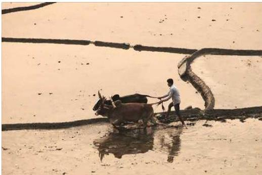
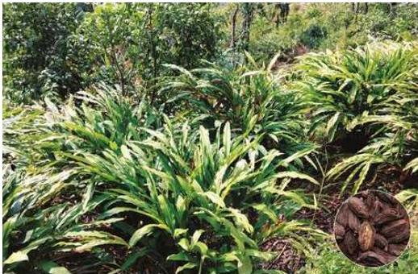
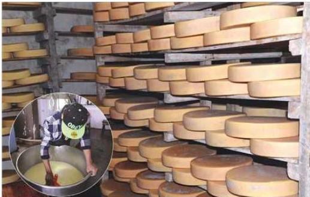
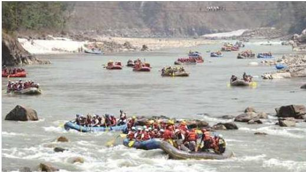
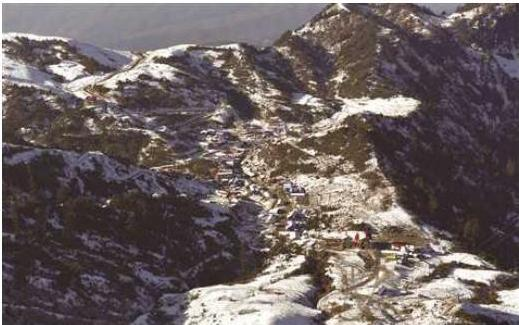

नेपालको आर्थिक विकास

हलो जोत्दै किसान
नेपाल विकासोन्मुख मुलुक हो । संयुक्त राष्ट्रसङ्घले सन् १९७१ मा नेपाल अतिक्रम विकसित राष्ट्र भएको उल्लेख गरेको थियो । नेपालमा न्यून प्रतिव्यक्ति आय, राष्ट्रिय आम्दानीको असमान वितरण, अधिकांश जनता कृषिमा निर्भर रहनु तथा रोजगारीमूलक व्यावसायिक शिक्षाको अभाव आदि कारणले गर्दा नेपाल विश्वका गरिब मुलुकहरूको सूचीमा रहँदै आएको छ । गरिबीका अन्य कारणमा बसाइँसराइ, शिक्षाको अभाव, जनचेतनाको अभाव, भूपरिवेष्ठत अर्थतन्त्र, आयातमा बढी जोड तथा प्राकृतिक साधनहरूको उचित सदुपयोगको अभाव आदि रहेका छन् ।
कृषिमा आधारित जनसङ्ख्या, विप्रेषणमा आधारित अर्थतन्त्र, गरिबी, भूपरिवेष्ठत अर्थतन्त्र, अल्पविकसित देश, राष्ट्रिय आयको असमान वितरण, असन्तुलित क्षेत्रीय
नेपाल परिच्छेद/१४१
विकास, प्राकृतिक स्रोतको कम उपयोग, सानो आकारको वैदेशिक व्यापार, मिश्रित अर्थतन्त्र, विदेशी सहायतामा निर्भर अर्थतन्त्र, मानव संसाधनको न्यून विकास, प्रचुर सम्भावनाबीच न्यून पर्यटकीय व्यवसाय, सांस्कृतिक सम्पदाको न्यून उपयोग, न्यून ऊर्जा उपयोग, न्यून आर्थिक विकास दर आदि वर्तमान नेपालको उन्नत आर्थिक विकासमा बाधकको रूपमा रहेका छन् । UN ले नेपाललाई सन् २०२६ सम्ममा विकासशील राष्ट्रमा स्तरोन्नति गर्ने भनिएको छ ।
५.१ नेपालमा योजनाबद्ध विकास
निश्चित लक्ष्य तथा उद्देश्य प्राप्त गर्न निश्चित समयावधिभित्र केन्द्रीय अधिकारीहरूद्वारा नियोजित रूपले गरिने अर्थतन्त्रमाथिको नियन्त्रण तथा निर्देशन नै योजना हो ।
योजनामा पूर्ण रोजगारी, असमानता घटाउँदै जाने, गरिबी घटाउने, साधनस्रोतको सदुपयोग गर्ने, आर्थिक विकासको गति तीव्र बनाउने, सन्तुलित विकास प्रोत्साहित गराउने, आत्मनिर्भरतातर्फ उन्मुख हुने, सामाजिक सुरक्षा र आर्थिक स्थिरता प्रदान गर्ने जस्ता उद्देश्यहरू अन्तर्निहित हुन्छन् ।
नेपालमा योजनाको इतिहास त्यति धेरै पुरानो छैन । २०४ वर्षसम्म नेपालको शासनको बागडोर राणाहरूले हातमा लिए पनि योजनाबद्ध विकासका लागि खास कदमहरू चालेनन् । यद्यपि राणा प्रधानमन्त्री जुद्धशमशेरले २० वर्षीय योजनाको घोषणा गरेका थिए । तर, यसलाई कार्यान्वयनमा ल्याइएन । राजनीतिक स्थिरता र दिशाबोध स्पष्ट नभएका कारणले गर्दा २००७ सालपछि आर्थिक योजनाको सुरुवात नभए तापनि यस सम्बन्धमा प्रशस्त गृहकार्य भए । २००८ सालमा पहिलोपल्ट बजेटको व्यवस्था भयो । वि.सं. २०१३ सालदेखि नेपालमा योजनाबद्ध विकासको थालनी भएको हो । यी विभिन्न योजनालाई सङ्क्षेपमा तल प्रस्तुत गरिएको छ :
५.१.१ प्रथम योजना (२०१३–२०१८)
प्रथम योजना वि.सं. २०१३ साल आश्विन १ गतेदेखि सुरु भई २०१८ साल श्रावण मसान्तसम्ममा पूरा भएको थियो ।
उद्देश्य
(क) उत्पादन र रोजगारी वृद्धि गर्ने
(ख) भेदभावरहित तरिकाले जनताको जीवनस्तरमा सुधार ल्याउने
(ग) भविष्यका योजनाका लागि पूर्वाधार तयार गर्ने क्रममा आवश्यक आर्थिक सर्वेक्षणहरू सम्पन्न गर्ने
प्राथमिकता
(क) यातायात र सञ्चार
(ख) सिँचाइ, ऊर्जा र वन
१५२/नेपाल परिचय
(ग) कृषि तथा कृषिजन्य उत्पादन (घ) सामाजिक सेवा (ङ) उद्योग, खानी र पर्यटन
५.१.२ दोस्रो योजना (२०१९-२०२२) दोस्रो योजना २०१९ सालदेखि सुरु भई २०२२ सालमा पूरा भयो ।
उद्देश्य (क) बढ्दो जनसङ्ख्याको आवश्यकता पूरा गर्न कृषि तथा औद्योगिक क्षेत्रको उत्पादन वृद्धि गर्ने (ख) मूल्य स्थिरता कायम गरी विकासको वातावरण सिर्जना गर्ने (ग) श्रममूलक प्रविधिको प्रयोग गरी रोजगारीका अवसरहरू बढाउने (घ) न्यायोचित सामाजिक व्यवस्था कायम गर्ने
प्राथमिकता (क) यातायात र सञ्चार (ख) सामाजिक सेवा (ग) उद्योग, खानी तथा पर्यटन (घ) कृषि, सिँचाइ, वन तथा खानेपानी (ङ) ऊर्जा (Energy) (च) विविध
५.१.३ तेस्रो योजना (२०२२-२०२७) तेस्रो योजना वि.सं. २०२२ सालमा सुरु भई २०२७ सालमा समाप्त भएको थियो । यस योजनाले १५ वर्षभित्र राष्ट्रिय उत्पादनलाई दोब्बर गर्ने लक्ष्य लिएको थियो । यसअनुसार राष्ट्रिय आयमा १९ प्रतिशत, प्रतिव्यक्ति औसत आय ९ प्रतिशत, खाद्यान्न उत्पादनमा १५ प्रतिशत र नगदेबालीमा ७३ प्रतिशतले वृद्धि गर्ने लक्ष्य रहेको थियो ।
उद्देश्य (क) कृषि क्षेत्रको खाद्यान्न उत्पादनमा वृद्धि ल्याउने (ख) कृषिमा व्यवस्थामूलक सुधार गर्ने (ग) आधारभूत क्षेत्रहरू विकास गर्दै लैजाने (घ) औद्योगिक विकासको पूर्वाधार सिर्जना गर्ने (ङ) वैदेशिक व्यापारमा विविधता ल्याउने (च) सामाजिक आवश्यकता पूरा गर्दै जाने
नेपाल परिचय/१५३
१५४/नेपाल परिचय
प्राथमिकता
(क) यातायात र सञ्चार (ख) कृषि, सिँचाइ, वन तथा खानेपानी (ग) उद्योग (घ) सामाजिक सेवा (ङ) अन्य (विविध)
५.१.४ चौथो योजना (२०२७-२०३२)
चौथो योजना वि.सं. २०२७ मा सुरु गरी २०३२ सालमा पूरा भयो ।
उद्देश्य
(क) उत्पादन वृद्धिमा अधिकतम जोड दिने (ख) विकासका आधारभूत आवश्यकताहरू पूरा गर्दै लैजाने (ग) व्यापार विविधीकरण र व्यापार विस्तारलाई अधिक महत्व प्रदान गर्ने (घ) आर्थिक स्थिरता र विकास गतिमा गतिशीलता ल्याउने (ङ) श्रमशक्तिको अधिकतम उपयोग र जनसङ्ख्या नियन्त्रणतर्फ ध्यान दिने (च) शोषणरहित समाज सिर्जनाको आधार तयार पार्ने
प्राथमिकता
(क) यातायात र सञ्चार (ख) कृषि, भूमिसुधार तथा वन (ग) उद्योग, वाणिज्य, खानी तथा विद्युत् (घ) पञ्चायत, शिक्षा, स्वास्थ्य र अन्य सामाजिक सेवाहरू (ङ) तथ्याङ्क
५.१.५ पाँचौँ योजना (२०३२-२०३७)
उद्देश्य
(क) जनसाधारणका लागि आवश्यक पर्ने उत्पादन वृद्धिमा जोड दिने (ख) श्रमशक्तिको अधिकतम उपयोग गर्ने (ग) प्रादेशिक सन्तुलन कायम गरी प्रादेशिक एकीकरणतर्फ जोड दिने
प्राथमिकता
(क) कृषि, भूमिसुधार, सिँचाइ, वन, भूमिरक्षण र पुनर्वास (ख) यातायात र सञ्चार (ग) उद्योग, वाणिज्य, विद्युत् तथा खानी (घ) सामाजिक सेवा (शिक्षा, स्वास्थ्य आदि)
नेपाल परिचय/१५५
५.१.६ छैटौँ योजना (२०३७-२०४२)
उद्देश्य
- (क) उत्पादन वृद्धिदरमा तीव्रता ल्याउने
- (ख) उत्पादनशील रोजगारीका अवसरहरू सिर्जना गर्ने
- (ग) जनताको न्यूनतम आधारभूत आवश्यकता पूरा गर्ने
प्राथमिकता
- (क) कृषि, सिँचाइ तथा वन
- (ख) उद्योग, खानी र विद्युत्
- (ग) सामाजिक सेवाहरू
- (घ) यातायात र सञ्चार
नीतिहरू
- (क) कृषि क्षेत्रको विकासतर्फ विशेष जोड दिने
- (ख) साना, घरेलु र कुटीर उद्योगहरूको विकासलाई महत्व दिने
- (ग) निकासी व्यापार र पर्यटनको विकासमा जोड दिने
- (घ) प्राकृतिक स्रोत सम्पादको संरक्षण र जलस्रोतको विकासतर्फ विशेष ध्यान दिने
- (ङ) तयारी आधारशिलाको पूर्ण उपयोग गरिने
- (च) अर्थतन्त्रको सोचन क्षमता (Absorptive Capacity) विस्तार र जनसङ्ख्या नियन्त्रण गर्ने नीतिहरू अनुसरण गरिने छ ।
रणनीति
- (क) आर्थिक निर्णय विकेन्द्रीकरण
- (ख) संस्थागत आधारहरूको विकास
- (ग) सुदृढ तथा सक्षम विकास प्रशासन
- (घ) तालिमप्राप्त जनशक्ति विकास
- (ङ) निर्माण सामग्रीको आपूर्तिमा वृद्धि
५.१.७ सातौँ योजना (२०४२-२०४७)
सातौँ योजना वि.सं. २०४२ देखि सुरु भई २०४७ सालमा पूरा भयो ।
उद्देश्य
- (क) उत्पादन दरमा वृद्धि ल्याउने
- (ख) उत्पादनशील रोजगारीका अवसरहरू सिर्जना गर्ने
- (ग) जनताका न्यूनतम आवश्यकताहरू पूरा गर्दै लैजाने
१५६/नेपाल परिचय
प्राथमिकता
(क) कृषि, सिँचाइ तथा वन (ख) उद्योग र विद्युत् (ग) सामाजिक सेवाहरू (घ) यातायात र सञ्चार
नीतिहरू
(क) कृषि क्षेत्रको विकासमा सर्वोपरि प्राथमिकता दिइने (ख) वनसम्पदाको विकास र भूसरक्षणमा जोड दिने (ग) जलस्रोतको विकासमा जोड दिने (घ) घरेलु उद्योगको विकास तथा विस्तार प्रोत्साहित गरिने (ङ) निकासी व्यापार प्रवर्द्धनका लागि अधिक जोड दिने (च) पर्यटन विकासमा जोड दिने (छ) जनसङ्ख्या वृद्धिदरमा नियन्त्रण गरिने (ज) आर्थिक एकीकरण गर्ने (भ) विकास प्रशासनलाई सुदृढ र सक्षम बनाउने
५.१.८ आठौँ योजना (२०४९-२०५४)
आठौँ योजना वि.सं. २०४९ देखि २०५४ सालसम्म सञ्चालन भएको थियो। यस योजनाका प्रमुख उद्देश्य निम्नानुसार थिए :
1) दिगो आर्थिक वृद्धि हासिल गर्ने 2) गरिबी घटाउने 3) क्षेत्रीय असन्तुलन कम गर्ने
प्राथमिकता
(क) कृषि सघनता र विविधीकरण (ख) ऊर्जा विकास (ग) ग्रामीण पूर्वाधार विकास (घ) रोजगारी सिर्जना र जनशक्ति विकास (ङ) जनसङ्ख्या वृद्धिमा नियन्त्रण (च) औद्योगिक विकास र पर्यटन प्रवर्द्धन (छ) निर्यात विस्तार, विविधीकरण (ज) समष्टिगत आर्थिक स्थायित्व (भ) विकास प्रशासनमा सुधार
(ज) अनुगमन र मूल्याङ्कन ।
क्षेत्रगत नीतिहरू
(क) कृषि उत्पादन वृद्धिमा भौगोलिक क्षेत्रीय (Agro-ecological zone) उपयुक्ततालाई अधिक प्राथमिकता दिइने
(ख) लाभदायक र निर्यातमूलक कृषि उपजको व्यवसायीकरण र विविधीकरणतर्फ जोड दिने
(ग) औद्योगिक बाली उत्पादनमा उच्च प्राथमिकता प्रदान गर्ने
(घ) कृषि प्रसार कार्यमा प्रभावकारिता ल्याउने (गाउँले, कृषक कार्यकर्ताहरू उपयोग गरिने)
(ङ) कृषि उत्पादन र उत्पादनका साधनबारेमा निजी क्षेत्रको सहभागिता वृद्धितर्फ अधिक महत्व प्रदान गरिने
(च) कृषि अनुसन्धान तथा कृषि प्रसारतर्फ जोड दिइने
(छ) कृषि लगानी प्रक्रियालाई सकेसम्म सरल बनाउने
(ज) सहकारीको विकास तथा विस्तारमा जोड दिइने
५.१.९ नवौँ योजना (२०५४–२०५९)
उद्देश्य
राष्ट्रको विकास अगाडि बढाउँदै लैजाने उद्देश्यअनुरूप २० वर्षे दीर्घकालीन विकास अवधारणासँग तादात्म्य कायम गरी राष्ट्रको प्रमुख चुनौतीको रूपमा रहेको गरिबीलाई दीर्घकालीन र प्रभावकारी रूपमा घटाउन ‘गरिबी निवारण’ गर्ने एक मात्र मूल उद्देश्य नवौँ योजनाले राखेको थियो ।
प्राथमिकता
(क) कृषि तथा वन
(ख) जलस्रोत
(ग) मानव संसाधन र सामाजिक विकास
(घ) औद्योगीकरण, पर्यटन विकास र अन्तर्राष्ट्रिय व्यापार
(ङ) भौतिक पूर्वाधार
नीति
(क) आर्थिक सुधारको प्रक्रिया अथवा पद्धति सुदृढ पार्दै आर्थिक वृद्धिदर फराकिलो बनाउँदै लगिने
(ख) दीर्घकालीन कृषि योजना कार्यान्वयन गरी कृषि क्षेत्रको विकास तथा विस्तार कार्यक्रम अगाडि बढाउने
नेपाल परिचय/१५७
१५८/नेपाल परिचय
(ग) भू-स्वामित्वको समस्या निराकरण गर्दै भूमिमाथि भूमिहीन किसानको पहुँच बढाउँदै कृषिको उत्पादकत्व बढाउने तथा कृषिमाथि आधारित उद्योगहरूको विकास तथा विस्तारद्वारा आम्दानी र रोजागारीका अवसरहरू सिर्जना गरी गरिबीको समस्या कम गर्दै लैजाने
(घ) जनसहभागितालाई मुख्य आधार बनाउँदै विकेन्द्रीकरण, स्थानीय विकास तथा मानवीय संसाधन विकासको माध्यमबाट पिछडिएका जाति जनजातिहरूको आर्थिक तथा सामाजिक उत्थान गर्ने
(ङ) उद्यमशील र सीपमूलक तालिमको सञ्चालन तथा विस्तारद्वारा स्वरोजगारी र रोजगारका अवसरहरू प्राप्त गर्न सामथर्यवान् जनशक्ति उत्पादन गरिने। त्यस्ता कार्यक्रमलाई गरिबी निवारणको प्रमुख माध्यम बनाई प्राविधिक सहायता, सरसल्लाह, ऋण प्रवाहजस्ता सेवाहरू व्यापक रूपमा ग्रामीण तहसम्म विस्तार गरिने
(च) कृषि, घरेलु तथा साना उद्योग र पर्यटन क्षेत्रको विकासलाई ग्रामीण तहसम्म विस्तार गरी आयआर्जन र रोजगारीका अवसरहरूमा व्यापकता ल्याउने।
(छ) साधनको सीमिततालाई ध्यान दिई साधनलाई सकेसम्म छिटो र ज्यादा प्रतिफल दिने, रोजगारीमूलक न्यायोचित वितरणलाई सघाउ पुर्याउने खालका कृषि, साना उद्योग र पर्यटनलाई केन्द्रित गरिने
(ज) वैदेशिक व्यापारमा निकासी व्यापारलाई अधिकतम प्रोत्साहित गरिने। व्यापार विविधीकरणको नीति अनुसरण गर्दा तुलनात्मक लाभ र प्रतिस्पर्धात्मक वातावरण तयार गर्न कानुनी र संस्थागत पूर्वाधार विकास गर्दै लगिने
(भ) आर्थिक तथा सामाजिक पूर्वाधारको व्यापक विकास तथा विस्तारद्वारा अर्थतन्त्रको उत्पादन र उत्पादन क्षमता बढाउँदै लैजाने
५.१.१० दशौँ योजना (२०५९-२०६४)
उद्देश्य
-
देशमा विद्यमान गरिबीको अवस्थाबाट उन्मुक्तिसहित एक सुसंस्कृत, आधुनिक एवम् प्रतिस्पर्धात्मक क्षमतायुक्त जनसमाज सिर्जना गर्ने (दीर्घकालीन उद्देश्य)।
-
सरकार, स्थानीय निकाय, गैरसरकारी क्षेत्र, निजी क्षेत्र र नागरिक समाजको संयुक्त सहभागितामा स्रोत साधनहरूको समुचित परिचालन गर्दै आर्थिक अवसर एवम् रोजगारीका क्षेत्रहरू विस्तार गर्ने र सशक्तीकरण, मानवीय विकास, सुरक्षा तथा लक्षित कार्यक्रममार्फत महिला, दलित, दुर्गम क्षेत्रका बासिन्दालगायत अति गरिब एवम् पिछडिएका वर्गको साधन तथा आर्थिक उपलब्धिहरूमा पहुँच वृद्धि गर्दै आर्थिक, मानवीय एवम् सामाजिक परिसूचकहरूको सुधार गरी गरिबी घटाउने। (अल्पकालीन अथवा दशौँ योजनाको उद्देश्य)
विशेष जोड दिइएका क्षेत्रहरू
राष्ट्रिय प्राथमिकता, विद्यमान समस्या र विकास सम्भावनाका आधारमा दशौँ योजनामा विशेष जोड दिइने निम्नअनुसारका क्षेत्रहरू पहिचान गरिएका थिए :
क) कृषि विकास, प्राकृतिक स्रोतको दिगो व्यवस्थापन तथा जैविक विविधता
ख) ग्रामीण पूर्वाधारहरूको विकास तथा ग्रामीण ऊर्जा
ग) जनसङ्ख्या एवम् सामाजिक सेवा र आधारभूत सामाजिक सुरक्षा
घ) निजी क्षेत्रको भूमिकामा पर्यटन, जलस्रोत, सूचना प्रविधि तथा औद्योगिक एवम् व्यापारिक क्षेत्रहरूको विकास
ङ) मानवीय संसाधनको विकास र महिला सशक्तीकरण
च) दलित, जनजाति तथा विपन्न वर्गको उत्थान एवम् रोजगारी तथा आधारभूत सुरक्षाका लागि लक्षित कार्यक्रम
छ) स्थानीय विकास तथा गैरसरकारी एवम् सामुदायिक संस्थाहरूको सुदृढीकरण
ज) दुर्गम क्षेत्र एवम् क्षेत्रगत विकासमा जोड
भ) ग्रामीण प्रविधिमा परिमार्जन एवम् उच्च प्रविधिको प्रयोग
ञ) सुशासनको प्रत्याभूति र अभिवृद्धि
ट) वातावरण संरक्षण तथा प्रवर्द्धन
ठ) राष्ट्रिय एवम् क्षेत्रीय स्तरका पूर्वाधारहरूको विकास
रणनीति
(१) उच्च, दिगो र फराकिलो आर्थिक वृद्धि
(२) सामाजिक क्षेत्र र पूर्वाधार विकास
(३) लक्षित कार्यक्रम
(४) सुशासन
५.१.११ एघारौँ अन्तरिम योजना (२०६४/०६५-२०६६/०६७)
जनआन्दोलन २०६२-०६३ पछिको त्रिवर्षीय अन्तरिम योजनाले समृद्ध, आधुनिक र न्यायपूर्ण नेपालको निर्माण गर्ने दीर्घकालीन सोचअनुरूप रोजगारीमूलक, गरिबी निवारणउन्मुख फराकिलो आर्थिक वृद्धि हासिल गर्ने; सुशासन प्रवर्द्धन तथा सेवा प्रवाहमा प्रभावकारिता बढाउन भौतिक पूर्वाधार विकासमा लगानी वृद्धि गर्ने, सामाजिक विकासलाई जोड दिने; समावेशी विकास र लक्षित कार्यक्रमहरू सञ्चालन गर्ने उद्देश्य लिएको थियो। भौतिक संरचनाहरूको पुनर्निर्माण र पुन:स्थापना; द्वन्द्व प्रभावितहरूलाई राहत, पुन:स्थापना तथा सामाजिक एकीकरण र समायोजन; विकासका सबै संरचना, क्षेत्र र प्रक्रियाहरूमा उपेक्षित समुदाय, क्षेत्रको समावेशीकरण, कृषि, पर्यटन तथा उद्योगलाई टेवा पुग्ने विद्युत् विकास, सडक, सिँचाइ तथा सञ्चार जस्ता भौतिक पूर्वाधारको विकास तथा शिक्षा,
नेपाल परिचय/१५९
स्वास्थ्य, खानेपानी सरसफाइको विकासमार्फत मानव संसाधनको विकासलाई योजनाले प्राथमिकता दिएको थियो ।
५.१.१२ बाह्रै योजना (२०६७/०६८-२०६९/०७०)
दीर्घकालीन सोच
आगामी दुई दशकभित्रमा नेपाललाई अतिक्रम विकसित मुलुकबाट विकासोन्मुख मुलुकमा रूपान्तरण गरी क्रमशः समृद्ध, शान्त, न्यायपूर्ण नेपाल बनाउने यस योजनाको दीर्घकालीन सोच रहेको छ । यस अवस्थामा नेपालमा उच्च आर्थिक वृद्धि हासिल भई गरिबीको रेखामुनि रहेको जनसङ्ख्या न्यून रहनेछ र नेपाल एक समृद्ध आधुनिक राष्ट्रको रूपमा विकसित भएको हुनेछ । देशका सबै क्षेत्रमा शान्ति र सुशासन कायम भएको अवस्था हुनेछ । सबै नेपालीहरूले आफ्नो भविष्य सुनिश्चित गर्नका लागि समान अवसर उपयोग गरेका हुनेछन् । समाजमा कानुनी, सामाजिक, सांस्कृतिक, भाषिक, धार्मिक, आर्थिक, जातीय, लैङ्गिक, शारीरिक र भौगोलिकसमेतका सबै प्रकारका विभेद र असमानता अन्त्य भएको हुनेछ ।
लक्ष्य
सन् २०१५ सम्ममा सहस्राब्दी विकास लक्ष्यहरू प्राप्त गर्न सम्मानजनक र लाभजन्य रोजगारी सिर्जना गर्न, आर्थिक असमानता घटाउने, क्षेत्रीय सन्तुलन हासिल गर्न र सामाजिक वञ्चितीकरणलाई हटाउँदै आम नेपालीको जीवनस्तरमा सुधार ल्याउने र दिगो आर्थिक वृद्धिमार्फत गरिबीलाई २१ प्रतिशतमा पुग्याउने लक्ष्य रहेको थियो ।
उद्देश्य
रोजगारीकेन्द्रित समावेशी तथा समन्यायिक आर्थिक वृद्धि गरी गरिबी निवारण र दिगो शान्ति स्थापनामा सघाउ पुग्याउँदै आमजनताको जीवनमा परिवर्तनको प्रत्यक्ष अनुभूति दिलाउनु यस योजनाको प्रमुख उद्देश्य रहेको थियो ।
रणनीति
यस योजनाले समष्टिगत रणनीतिमा रोजगारीकेन्द्रित फराकिलो आर्थिक वृद्धि हासिल गर्ने भावी सङ्घीय प्रदेशहरू र क्षेत्रीय सन्तुलनलाई समेत ध्यानमा राख्दै विकासका पूर्वाधारहरू सिर्जना गर्ने; समावेशी तथा समन्यायिक विकास गर्ने, मुलुकको आर्थिक सामाजिक रूपान्तरणलाई सघाउ पुग्याउने, सुशासन एवम् सेवा प्रवाहलाई प्रभावकारी बनाउने र विकासमा मूल प्रवाहीकरण गर्नेसमेतका निम्न रणनीतिहरू अधि सारेको थियो :
-
सरकारी, निजी, सामुदायिक र सहकारी सबै क्षेत्रको संयुक्त प्रयासमा रोजगारीमूलक तथा गरिबी निवारणउन्मुख दिगो र फराकिलो आर्थिक विकास हासिल गर्ने
-
देशको भावी सङ्घीय स्वरूपलाई टेवा पुग्याउने र प्रादेशिक आर्थिक वृद्धिसमेतलाई सहयोग पुग्ने गरी भौतिक पूर्वाधार तयार गर्ने
१६०/नेपाल परिचय
- दिगो शान्ति हासिल गर्ने समावेशी तथा समन्यायिक विकासलाई जोड दिने
- आर्थिक, सामाजिक सेवा सुदृढ गरी राज्यको आर्थिक सामाजिक रूपान्तरणमा सघाउ पुर्याउने
- सुशासनको प्रत्याभूति गरेर सेवा प्रवाहलाई प्रभावकारी तुल्याउँदै विकास कार्यलाई नितिजामुखी बनाउने
- निजी तथा सामुदायिक र सहकारी क्षेत्रको विकास र औद्योगीकरण, व्यापार तथा सेवा क्षेत्रलाई राष्ट्रिय विकासको प्रयासमा मूलप्रवाहीकरण गरी आर्थिक वृद्धि र स्थायित्व सुदृढ गर्ने
प्राथमिकताका क्षेत्रहरू
यस योजनाले निम्नलिखित प्राथमिकताका क्षेत्रहरूको पहिचान गरेको थियो :
- भौतिक तथा सामाजिक पूर्वाधारहरूको सन्तुलित विकास
- कृषि क्षेत्रको विकासलाई प्राथमिकता दिँदै पर्यटन, उद्योग र निर्यात व्यापारलाई महत्व दिई रोजगारी सिर्जना र आर्थिक वृद्धि गर्ने
- उपेक्षित समुदाय, क्षेत्र र लिङको समावेशीकरण गरी विकासमा टेवा पुर्याउन लगानी बढाउने
- मानवीय जीवन्यापनका निमित्त अत्यावश्यक सेवा (खानेपानी, ऊर्जा, विद्युत, सडक, सञ्चार, खाद्यसुरक्षा, औषधोपचार, शिक्षा) को उपलब्धता र निरन्तरतालाई सुनिश्चित गर्ने यी क्षेत्रमा आवश्यक लगानी अभिवृद्धि गर्ने
- सुशासनको अभिवृद्धि गरी जनतालाई पुर्याउने सेवा सुविधा गुणस्तरयुक्त बनाई सुपथ मूल्यमा समयमा उपलब्ध गराउन जोड दिने
- वातावरण संरक्षण गरी जलवायु परिवर्तनबाट पर्ने असर न्यून गर्ने र अवसरहरूको उपभोगमा ध्यान दिइने
- राष्ट्रियस्तरमा प्राथमिकताप्राप्त महत्वपूर्ण र आमजनतालाई प्रत्यक्ष राहत दिने कार्यक्रम र आयोजनाहरूलाई उच्च प्राथमिकता दिने
५.१.१३. तेह्रौं योजना (आर्थिक वर्ष २०७०/०७१-२०७२/०७३)
पृष्ठभूमि
नेपाल अभै पनि अतिक्रम विकसित मुलुकको रूपमा रहेको छ। राजनीतिक प्रतिबद्धतासहित विकास कार्यमा थप प्रभावकारिता ल्याउन सकिएमा नेपाललाई अतिक्रम विकसित राष्ट्रबाट मध्यम आय भएको विकासशील राष्ट्रको सूचीमा स्तरोन्नति गर्न सकिने सम्भावना रहेको छ। यसका साथै सहस्राब्दी विकास लक्ष्य एवम् दक्षिण एसियाली क्षेत्रीय सहयोग सङ्गठनका विकास लक्ष्य हासिल गर्ने र दिगो विकासलगायतका विषयहरूलाई सम्बोधन गरी हरित अर्थतन्त्रलाई प्रवर्द्धन गर्दै गरिबी न्यूनीकरण गर्नेतर्फ यो योजनालाई
नेपाल परिचय/१६१
केन्द्रित गरिएको पाइन्छ ।
दीर्घकालीन सोच : वि.सं. २०७९ (सन् २०२२) भित्र नेपाललाई अतिक्रम विकसित राष्ट्रबाट विकासशील राष्ट्रमा स्तरोन्तीत गर्ने
उद्देश्य : देशमा व्याप्त आर्थिक तथा मानवीय गरिबी घटाई आमजनताको जीवनस्तरमा प्रत्यक्ष परिवर्तनको अनुभूति दिलाउने
योजनाको प्रमुख लक्ष्य : गरिबीको रेखामुनि रहेको जनसङ्ख्या १८ प्रतिशतमा भन्ने । अन्य लक्ष्यहरू तालिका ५.१ मा दिइएको छ ।
रणनीति
उपरोक्त उद्देश्य र लक्ष्य हासिल गर्न यो योजनाले देहायका रणनीतिहरू अपनाएको छ :
(१) विकास प्रक्रियामा निजी, सरकारी र सहकारी क्षेत्रको योगदान अभिवृद्धि गरी समावेशी, फराकिलो एवम् दिगो आर्थिक वृद्धि हासिल गर्ने
(२) भौतिक पूर्वाधारको विकास गर्ने
(३) सामाजिक सेवाका क्षेत्रहरूमा पहुँच, उपयोग र गुणस्तर अभिवृद्धि गर्ने
(४) सार्वजनिक तथा अन्य क्षेत्रमा सुशासन अभिवृद्धि गर्ने
(५) लक्षित वर्ग, क्षेत्र र समूहको आर्थिक र सामाजिक सशक्तीकरणमा अभिवृद्धि गर्ने
(६) जलवायु परिवर्तनसँग अनुकूलन हुने गरी विकास कार्यक्रमहरू सञ्चालन गर्ने
प्राथमिकताका क्षेत्रहरू
यो योजनाले तोकेका प्राथमिकताका क्षेत्रहरू देहायअनुसार छन् :
(१) जलविद्युत् तथा अन्य ऊर्जा विकास
(२) कृषि क्षेत्रको उत्पादकत्व वृद्धि, विविधीकरण र व्यवसायीकरण
(३) पर्यटन, उद्योग र व्यापार क्षेत्रको विकास
(४) आधारभूत शिक्षा तथा स्वास्थ्य, खानेपानी तथा सरसफाइ क्षेत्रको विकास
(५) सुशासन प्रवर्द्धन
(६) सडक तथा अन्य भौतिक पूर्वाधार विकास
(७) प्राकृतिक स्रोत र वातावरण संरक्षण
५.१.१४ चौधौँ योजना (२०७३/०७४ - २०७५/०७६)
सोच : स्वाधीन, समुन्नत तथा समाजवादउन्मुख राष्ट्रिय अर्थतन्त्र एवम् समृद्ध नेपाली
लक्ष्य : सामाजिक न्यायसहितको लोककल्याणकारी राज्य हुँदै मध्यम आय भएका मुलुकको स्तरमा पुग्ने
उद्देश्य : उत्पादनशील रोजगारीउन्मुख र न्यायपूर्ण वितरणसहितको उच्च आर्थिक वृद्धिद्वारा द्रुत गरिबी न्यूनीकरण गर्दै आर्थिक सामाजिक रूपान्तरण गर्नु
१६२/नेपाल परिचय
तालिका नं. ५.१ चौधौँ योजनाको प्रमुख आर्थिक, सामाजिक र भौतिक लक्ष्य
| क्र. सं. | सूचक/लक्ष्य | आ.व. २०७२/७३ को स्थिति | चौधौँ योजनाको लक्ष्य (२०७५/७६ मा) |
|---|---|---|---|
| १ | वार्षिक औसत आर्थिक वृद्धिदर (%) | ०.८ | ७.२ |
| कृषि क्षेत्र (%) | १.३ | ४.७ | |
| गैरकृषि क्षेत्र (%) | ०.६ | ८.४ | |
| २ | गार्हस्थ्य प्रतिव्यक्ति आम्दानी (रु. हजारमा) | ७९.४ | ११६.५ |
| ३ | गरिबीको रेखामुनिको जनसङ्ख्या (%) | २१.६ | १७.० |
| ४ | मानव विकास सूचकाङ्क | ०.५४ | ०.५७ |
| ५ | लैङ्गिक सशक्तीकरण सूचकाङ्क | ०.५६ | ०.५८ |
| ६ | अपेक्षित आयु (वर्ष) | ६९ | ७२ |
| ७ | खानेपानी सेवा पुगेको जनसङ्ख्या (%) | ८३.६ | ९०.० |
| ८ | माध्यमिक तहमा खुद भनौंदर (%) | ३७.७ | ४५.० |
| ९ | विद्युत् उत्पादन (जडित क्षमता, मेगावाट) | ८५१ | २३०१ |
| १० | विद्युत् मा पहुँच प्राप्त जनसङ्ख्या (%) | ७४.० | ८७.० |
| ११ | सिँचाइ (हेक्टर लाखमा) | १३.९ | १५.२ |
| १२ | इन्टरनेट सेवामा पहुँच प्राप्त जनसङ्ख्या (%) | ४४.४ | ६५.० |
योजनाका रणनीति
-
कृषि क्षेत्रको रूपान्तरण, पर्यटन, औद्योगिक एवम् साना तथा मकौला व्यवसायको विस्तारमार्फत उत्पादन वृद्धि गर्ने
-
ऊर्जा, सडक तथा हवाई यातायात, सूचना तथा सञ्चार र ग्रामीण-सहरी तथा त्रिदेशीय आबद्धता विकासका लागि पूर्वाधार निर्माण गर्ने
नेपाल परिचय/१६३
-
सामाजिक विकास र सामाजिक सुरक्षा एवम् सामाजिक संरक्षणमा जोड दिँदै मानव विकासमा उच्च तथा दिगो सुधार गर्ने
-
आर्थिक, सामाजिक एवम् शासकीय सुधार, कुशल एवम् जवाफदेही सार्वजनिक वित्त, स्वच्छ, पारदर्शी र जनमैत्री सार्वजनिक सेवा एवम् मानव अधिकारको संरक्षण र प्रवर्द्धन गर्दै समग्र सुशासन प्रवर्द्धन गर्ने
-
लैड्जिगिक समानता, समावेशीकरण, वातावरण संरक्षण, विज्ञान तथा प्रविधिको उच्चतम प्रयोग तथा संस्थागत क्षमता बढाउने
५.१.१५ पन्ध्रौं योजना (आर्थिक वर्ष २०७६/०७७-२०८०/०८१)
पृष्ठभूमि
नेपालको संविधानमा समुन्नत, स्वाधीन र समाजवादउन्मुख अर्थतन्त्रको निर्माण गर्ने परिकल्पना गरिएको छ। तीव्र र सन्तुलित आर्थिक विकास, समृद्धि, सुशासन र नागरिकले सुखको अनुभूति प्राप्त गर्ने दूरदृष्टि पन्ध्रौं योजनाले राखेको छ। सङ्घीय संरचनामा तीन तहको कुशल अन्तरसरकारी वित्त व्यवस्थापन र निजी, सहकारी तथा सामुदायिक क्षेत्रसँगको सहकार्यद्वारा लक्षित उद्देश्य हासिल गर्ने यो पहिलो योजना हुनेछ। यस योजनाले वर्तमान पुस्ताले नै अनुभूत गर्ने गरी समृद्धि र सुख प्राप्त गर्ने र समाजवादउन्मुख अर्थतन्त्रको आधार निर्माण गर्नेछ। आय वृद्धि, गुणस्तरीय मानव पुँजी निर्माण र आर्थिक जोखिमहरूको न्यूनीकरण गर्दै वि.सं. २०७९ सम्ममा अतिक्रम विकसित मुलुकबाट विकासशील देशमा स्तरोन्नति गर्ने र वि.सं. २०८७ सम्ममा दिगो विकास लक्ष्यलाई हासिल गर्ने सोचसहित उच्चमध्यम आयस्तर भएको मुलुकमा पुग्ने गरी पन्ध्रौं योजना तर्जुमा गरिएको छ।
राष्ट्रिय लक्ष्य
पन्ध्रौं योजना ‘समृद्ध नेपाल, सुखी नेपाली’को दीर्घकालीन सोच हासिल गर्ने आधार योजनाको रूपमा रहने छ। सोबमोजिम समृद्ध अर्थतन्त्र, सामाजिक न्याय तथा परिष्कृत जीवनसहितको समाजवादउन्मुख लोककल्याणकारी राज्यको रूपमा रुपान्तरण गर्दै उच्च आयस्तर भएको मुलुकमा स्तरोन्नति हुने आधार निर्माण गर्ने यस योजनाको राष्ट्रिय लक्ष्य रहेको छ।
तालिका नं. ५.२
समृद्धिका राष्ट्रिय लक्ष्य, गन्तव्य र सूचक
| क्र.सं. | राष्ट्रिय लक्ष्य, गन्तव्य र सूचक | एकाड | आ.व. २०७५/०७६ को स्थिति | आ.व. २०८०/०८१ को लक्ष्य |
|---|---|---|---|---|
| १ | उच्च र समतामूलक राष्ट्रिय आय | |||
| १.१ | औद्योगिक राष्ट्र स्तरको उच्च आय |
१६४/नेपाल परिचय
| क्र.सं. | राष्ट्रिय लक्ष्य, गन्तव्य र सूचक | एकाइ | आ.व. २०७५/०७६ को स्थिति | आ.व. २०८०/०८१ को लक्ष्य |
|---|---|---|---|---|
| १.१.१ | आर्थिक वृद्धिदर (आधारभूत मूल्यमा) | प्रतिशत | ६.८ | १०.३ |
| १.१.२ | प्रतिव्यक्ति कुल राष्ट्रिय आय | अमेरिकी डलर | १,०४७ | १,५९५ |
| १.२ | गरिबीको अन्त्य | |||
| १.२.१ | गरिबीको रेखामुनि रहेको जनसङ्ख्या (निरपेक्ष गरिबी) | प्रतिशत | १८.७ | ९.५ |
| १.३ | राष्ट्रिय आम्दानीमा तल्लो ४० प्रतिशत जनसङ्ख्याको हिस्सा | |||
| १.३.१ | आम्दानीमा माधिल्लो १० प्रतिशत र तल्लो ४० प्रतिशत जनसङ्ख्याको अनुपात | अनुपात | १.३ | १.२५ |
| १.३.२ | सम्पत्तिमा आधारित जिनी गुणक | गुणक | ०.३१ | ०.२९ |
| २ | मानव पुँजी निर्माण तथा सम्भावनाको पूर्ण उपयोग | |||
| २.१ | स्वस्थ र लामो आयु भएका नेपाली | |||
| २.१.१ | अपेक्षित आयु (जन्म हुँदाको) | वर्ष | ६९.७ | ७२ |
| २.१.२ | मातृ मृत्युदर (प्रतिलाख जीवित जन्ममा) | सङ्ख्या | २३९ | ९९ |
| २.१.३ | ५ वर्षमुनिका बाल मृत्युदर (प्रतिहजार जीवित जन्ममा) | सङ्ख्या | ३९ | २४ |
| २.१.४ | किशोरी अवस्थाको प्रजनन (१९ वर्षमुनि) | प्रतिशत | १३ | ६ |
| २.२ | गुणस्तरीय, रोजगारमूलक तथा जीवनोपयोगी शिक्षा प्राप्त नागरिक | |||
| २.२.१ | साक्षरता दर (१५ वर्षमाधि) | प्रतिशत | ५८ | ९५ |
| २.२.२ | युवा साक्षरता दर (१५-२४ वर्ष) | प्रतिशत | ९२ | ९९ |
| २.२.३ | आधारभूत तह (१-८) मा खुद भनौंदर | प्रतिशत | ९३ | ९९ |
| २.२.४ | माध्यमिक तह (९-१२) मा खुद भनौंदर | प्रतिशत | ४६ | ६५ |
नेपाल परिचय/१६५
| क्र.सं. | राष्ट्रिय लक्ष्य, गन्तव्य र सूचक | एकाइ | आ.व. २०७५/०७६ को स्थिति | आ.व. २०८०/०८१ को लक्ष्य |
|---|---|---|---|---|
| २.२.५ | उच्च शिक्षामा कुल भनादर | प्रतिशत | १२ | २२ |
| २.२.६ | काम गर्ने उमेर समूहका प्राविधिक र व्यावसायिक क्षेत्रमा तालिमप्राप्त जनसङ्ख्या | प्रतिशत | ३१ | ५० |
| २.३ | उत्पादनशील र मयादित रोजगारी | |||
| २.३.१ | श्रमशक्ति सहभागिता दर (१५ वर्षमाथि) | प्रतिशत | ३८.५ | ४९ |
| २.३.२ | रोजगारीमा औपचारिक क्षेत्रको हिस्सा | प्रतिशत | ३६.५ | ५० |
| ३ | सर्वसुलभ आधुनिक पूर्वाधार एवम् सघन अन्तरआबद्धता | |||
| ३.१ | सर्वसुलभ, सुरक्षित र आधुनिक यातायात | |||
| ३.१.१ | सडक घनत्व | कि.मि. प्रतिवर्ग कि.मि. | ०.५५ | ०.७४ |
| ३.१.२ | राष्ट्रिय र प्रादेशिक लोकमार्ग (२ लेनसम्म) | कि.मि. | ७,७९४ | २०,२०० |
| ३.१.३ | राष्ट्रिय लोकमार्ग (२ लेनमाथि, दुतमार्गसमेत) | कि.मि. | ९६ | १,१७४ |
| ३.१.४ | रेलमार्ग | कि.मि. | ४२ | ३४८ |
| ३.२ | पूर्वाधारमा पहुँच तथा आबद्धता | |||
| ३.२.१ | ३० मिनेटसम्मको दूरीमा यातायात पहुँच भएको परिवार | प्रतिशत | ८२ | ९५ |
| ३.२.२ | विद्युतूमा पहुँच प्राप्त परिवार | प्रतिशत | ८८ | १०० |
| ३.२.३ | इन्टरनेटमा पहुँच प्राप्त जनसङ्ख्या | प्रतिशत | ६५.९ | ८० |
| ४ | उच्च र दिगो उत्पादन तथा उत्पादकत्व | |||
| ४.१ | अर्थतन्त्रमा क्षेत्रगत योगदान | |||
| ४.१.१ | प्राथमिक क्षेत्र (कृषि, वन र खानी) | प्रतिशत | २७.६ | २३.० |
| ४.१.२ | द्वितीय क्षेत्र (उत्पादनमूलक उद्योग, विद्युत्, ग्यास, पानी तथा निर्माण) | प्रतिशत | १४.६ | १८.१ |
| ४.१.३ | तृतीय क्षेत्र (सेवा) | प्रतिशत | ५७.८ | ५८.९ |
१६६/नेपाल परिचय
| क्र.सं. | राष्ट्रिय लक्ष्य, गन्तव्य र सूचक | एकाइ | आ.व. २०७५/०७६ को स्थिति | आ.व. २०८०/०८१ को लक्ष्य |
|---|---|---|---|---|
| ४.२ | स्वच्छ ऊर्जाको उत्पादन तथा उपभोग | |||
| ४.२.१ | विद्युत् उत्पादन (जाँडत क्षमता) | मेगावाट | १,२५० | ५,८२० |
| ४.२.२ | प्रतिव्यक्ति विद्युत् उपभोग | किलोवाट घण्टा | २४५ | ७०० |
| ४.३ | व्यापार सन्तुलन | |||
| ४.३.१ | वस्तु तथा सेवाको निर्यात (कुल गार्हस्थ्य उत्पादनको अनुपातमा) | अनुपात | ९.० | १५.७ |
| ४.३.२ | वस्तु तथा सेवाको आयात (कुल गार्हस्थ्य उत्पादनको अनुपातमा) | प्रतिशत | ५०.८ | ५१ |
| ४.४ | राष्ट्रिय तथा क्षेत्रगत उत्पादकत्व | |||
| ४.४.१ | श्रम उत्पादकत्व | रु. हजारमा | १८४.६ | २७६ |
| ४.४.२ | कृषि उत्पादकत्व (प्रमुख बाली) | मे.ट. प्रतिहेक्टर | ३.१ | ४ |
| ४.४.३ | सिँचाइयोग्य भूमिमध्ये वर्षभरि सिँचाइ सुविधा पुगेको भूमि | प्रतिशत | ३३ | ५० |
| ४.४.४ | प्रतिपर्यटक खर्च (प्रतिदिन) | अमेरिकी डलर | ४८ | १०० |
| ५ | परिष्कृत तथा मर्यादित जीवन | |||
| ५.१ | नागरिक स्वस्थता तथा सन्तुष्टि | |||
| ५.१.१ | मानव विकास सूचकाङ्क | सूचकाङ्क | ०.५७९ | ०.६२४ |
| ५.१.२ | नागरिक सन्तुष्टिको अनुभूति सूचकाङ्क | सूचकाङ्क | ४.७ | ५.१ |
| ५.१.३ | बहुआयामिक गरिबीमा रहेको जनसङ्ख्या | प्रतिशत | २८.६ | ११.५ |
| ५.१.४ | ५ वर्षमुनिका कम तौल भएका बालबालिका | प्रतिशत | २७ | १५ |
| ५.१.५ | ३० मिनेटको दूरीमा स्वास्थ्य संस्थामा पहुँच भएको घर-परिवार | प्रतिशत | ४९ | ८० |
नेपाल परिचय/१६७
| क्र.सं. | राष्ट्रिय लक्ष्य, गन्तव्य र सूचक | एकाइ | आ.व. २०७५/०७६ को स्थिति | आ.व. २०८०/०८१ को लक्ष्य |
|---|---|---|---|---|
| ५.२ | सुरक्षित तथा सुविधासम्पन्न आवास | |||
| ५.२.१ | सुरक्षित आवासमा बसोबास गर्ने जनसङ्ख्या | प्रतिशत | ४० | ६० |
| ५.२.२ | आधारभूत खानेपानी सुविधा पुगेको जनसङ्ख्या | प्रतिशत | ८९ | ९९ |
| ५.२.३ | उच्चमध्यमस्तरको खानेपानी सुविधा पुगेको जनसङ्ख्या | प्रतिशत | २१ | ४० |
| ५.३ | भौतिक तथा आधुनिक सम्पत्तिमाधिको समतामूलक पहुँच वा स्वामित्व | |||
| ५.३.१ | आफ्नै स्वामित्वको आवासमा बसोबास गर्ने परिवार | प्रतिशत | ८५.३ | ८९ |
| ५.३.२ | सार्वजनिक धितोपत्रमा लगानी गर्ने जनसङ्ख्या | प्रतिशत | ४.४ | २० |
| ६ | सुरक्षित, सभ्य र न्यायपूर्ण समाज | |||
| ६.१ | विभेद, हिंसा र अपराधमुक्त समाज | |||
| ६.१.१ | लैङ्गिक विकास सूचकाङ्क | सूचकाङ्क | ०.८९७ | ०.९६३ |
| ६.१.२ | लैङ्गिक असमानता सूचकाङ्क | सूचकाङ्क | ०.४७६ | ०.३९ |
| ६.१.३ | जीवनकालमा शारीरिक वा मानसिक वा यौनहिंसापीडित महिला | प्रतिशत | २४.४ | १३ |
| ६.१.४ | दर्ता भएका लैङ्गिक हिंसालगायतका अपराधका घटना र अनुसन्धानको अनुपात | अनुपात | ८८.९ | १०० |
| ६.२ | सामाजिक-सांस्कृतिक विविधता | |||
| ६.२.१ | मातृभाषामा पठनपाठन हुने विद्यालय | सङ्ख्या | २७० | ३२४ |
| ६.२.२ | विश्वसम्पदा सूचीमा सूचीकृत सम्पदा | सङ्ख्या | १० | १२ |
| ६.३ | सामाजिक सुरक्षा तथा संरक्षण |
१६८/नेपाल परिचय
| क्र.सं. | राष्ट्रिय लक्ष्य, गन्तव्य र सूचक | एकाइ | आ.व. २०७५/०७६ को स्थिति | आ.व. २०८०/०८१ को लक्ष्य |
|---|---|---|---|---|
| ६.३.१ | आधारभूत सामाजिक सुरक्षामा आबद्ध जनसङ्ख्या | प्रतिशत | १७ | ६० |
| ६.३.२ | राष्ट्रिय बजेटमा सामाजिक सुरक्षा खर्च | प्रतिशत | ११.७ | १३.७ |
| ७ | स्वस्थ र सन्तुलित पर्यावरण | |||
| ७.१ | प्रदूषणामुक्त र स्वच्छ वातावरण | |||
| ७.१.१ | ऊर्जा उपभोगमा नवीकरणीय ऊर्जाको अनुपात | प्रतिशत | ७ | १२ |
| ७.१.२ | वायु प्रदूषणको औसत मात्रा (पिपिएम २.५) | माइक्रोग्राम प्रति घनमिटर | ५० | ४० |
| ७.२ | पर्यावरणीय सन्तुलन र दिगो उपयोग | |||
| ७.२.१ | वनजङ्गल घनत्व | रुख प्रतिहेक्टर | ४३० | ४५० |
| ७.२.२ | काठ उत्पादन | घनफिट (लाख) | १९४ | ३०० |
| ७.३ | जलवायु परिवर्तन अनुकूलनशीलता | |||
| ७.३.१ | अनुकूलन योजना तयार भई कार्यान्वयन भएका स्थानीय तह | सङ्ख्या | २१७ | ४६० |
| ८ | सुशासन | |||
| ८.१ | विधिको शासन | |||
| ८.१.१ | विधिको शासन सूचकाङ्क | सूचकाङ्क | ०.५४ | ०.५८ |
| ८.१.२ | विश्वव्यापी प्रतिस्पर्धी सूचकाङ्क | सूचकाङ्क | ५१.६ | ६० |
| ८.१.३ | व्यवसाय सहजीकरण सूचकाङ्क | सूचकाङ्क | ६३.२ | ६८ |
| ८.१.४ | भ्रमण तथा पर्यटन प्रतिस्पर्धी सूचकाङ्क | सूचकाङ्क | ३.३ | ३.८ |
नेपाल परिचय/१६९
| क्र.सं. | राष्ट्रिय लक्ष्य, गन्तव्य र सूचक | एकाइ | आ.व. २०७५/०७६ को स्थिति | आ.व. २०८०/०८१ को लक्ष्य |
|---|---|---|---|---|
| ८.२ | सार्वजनिक सदाचार, पारदर्शिता र जवाफदेही | |||
| ८.२.१ | भ्रष्टाचार न्यूनीकरण अनुभूति सूचकाङ्क | सूचकाङ्क | ३४ | ४१ |
| ८.२.२ | ‘हेलो सरकार’मा प्राप्त उजुरीको फख्यौट | प्रतिशत | ४८.९ | ९८ |
| ८.२.३ | कुल आर्थिक प्रतिष्ठानमध्ये दर्ता नभएका (अनौपचारिक) प्रतिष्ठानको अनुपात | प्रतिशत | ४९.९ | १० |
| ८.२.४ | दर्ता भएकामध्ये लेखा राख्ने आर्थिक प्रतिष्ठानको अनुपात | प्रतिशत | ५२ | ७० |
| ९ | सबल लोकतन्त्र | |||
| ९.१.१ | निर्वाचनमा मतदाताको सहभागिता | प्रतिशत | ६८.६७ | ७२ |
| ९.१.२ | मुद्दा फैसला | प्रतिशत | ५६.५ | ६० |
| ९.१.३ | फैसला कार्यान्वयन | प्रतिशत | ३९ | ६० |
| १० | राष्ट्रिय एकता, सुरक्षा र सम्मान | |||
| १०.१ | नेपालित्वको उच्च भावना | |||
| १०.१.१ | राष्ट्रिय परिचयपत्र प्राप्त गरेका नेपाली नागरिक | प्रतिशत | - | १०० |
| १०.१.२ | नेपालीलाई गन्तव्य मुलुकको अध्यागमनमा प्रवेशाज्ञा प्रदान गर्ने मुलुक | सङ्ख्या | ३५ | ६० |
| १०.२ | मानव तथा अन्य सुरक्षा | |||
| १०.२.१ | पाँच वर्षमुनिका बालबालिकाको जन्मदर्ता | प्रतिशत | ६३ | १०० |
| १०.२.२ | आधारभूत खाद्य सुरक्षाको स्थितिमा रहेका परिवार | प्रतिशत | ४८.२ | ८० |
| १०.२.३ | आत्महत्या दर (प्रतिलाख जनसङ्ख्यामा) | सङ्ख्या | १० | ५ |
१७०/नेपाल परिचय
| क्र.सं. | राष्ट्रिय लक्ष्य, गन्तव्य र सूचक | एकाद | आ.व. २०७५/०७६ को स्थिति | आ.व. २०८०/०८१ को लक्ष्य |
|---|---|---|---|---|
| १०.३ | विपद् उत्थानशील समाज र अर्थतन्त्र | |||
| १०.३.१ | विपद्का घटनाबाट प्रभावित जनसङ्ख्या | प्रतिहजार | १७.१ | ९.८ |
| १०.३.२ | विपद्का घटनाबाट मृत्यु हुने जनसङ्ख्या | प्रतिलाख | १.६ | १ |
| १०.४ | अत्यावश्यक वस्तु र सेवामा आत्मनिर्भरता | |||
| १०.४.१ | कुल आयातमा अत्यावश्यक वस्तु (कृषि उपज, जीवजन्तु र खाद्य पदार्थ) को अंश | प्रतिशत | १४.७ | ५ |
स्रोत : नेपाल परिचय, २०८१
राष्ट्रिय उद्देश्य
-
सर्वसुलभ, गुणस्तरीय र आधुनिक पूर्वाधार निर्माण, उत्पादनशील र मयादित रोजगारी अभिवृद्धि, उच्च, दिगो र समावेशी आर्थिक वृद्धि तथा गरिबी निवारण गर्दै समृद्धिको आधार निर्माण गर्नु
-
गुणस्तरीय स्वास्थ्य तथा शिक्षा, स्वस्थ तथा सन्तुलित वातावरण, सामाजिक न्याय र जवाफदेही सार्वजनिक सेवा कायम गरी सङ्घीय शासन व्यवस्थाको सुदृढीकरण गर्दै नागरिकलाई परिष्कृत र मयादित जीवनयापनको अनुभूति गराउनु
-
सामाजिक-आर्थिक रूपान्तरण तथा स्वाधीन राष्ट्रिय अर्थतन्त्र निर्माण गरी देशको स्वाभिमान, स्वतन्त्रता र राष्ट्रिय हित संरक्षण गर्नु
राष्ट्रिय रणनीति
-
तीव्र, दिगो र रोजगारमूलक आर्थिक वृद्धि गर्ने
-
सुलभ तथा गुणस्तरीय स्वास्थ्य सेवा र शिक्षाको सुनिश्चित गर्ने
-
आन्तरिक तथा अन्तरदेशीय अन्तरआबद्धता एवम् दिगो सहरबस्ती विकास गर्ने
-
उत्पादन र उत्पादकत्व अभिवृद्धि गर्ने
-
पूर्ण, दिगो र उत्पादनशील सामाजिक सुरक्षा तथा संरक्षण गर्ने
-
गरिबी निवारण र आर्थिक सामाजिक समानतासहितको न्यायपूर्ण समाज निर्माण गर्ने
-
प्राकृतिक स्रोतको संरक्षण र परिचालन तथा उद्यमशीलता विकास गर्ने र
-
सार्वजनिक सेवाको सुदृढीकरण, प्रादेशिक सन्तुलन र राष्ट्रिय एकता संवर्द्धन गर्ने ।
नेपाल परिचय/१७१
दीर्घकालीन सोच २१००
दीर्घकालीन विकास रणनीतिका माध्यमबाट सबै प्रकारका विभेद, बहिष्करण एवम् वञ्चितीकरणका अवशेष र विकासका अवरोध समाप्त गरी समाजवादउन्मुख समृद्ध अर्थव्यवस्था निर्माण गर्न र संविधानले अङ्गीकार गरेका विकासकेन्द्रित सोचलाई आवधिक योजनामा आन्तरिकीकरण गर्न नेपाल सरकारले २५ वर्षे दीर्घकालीन सोच (२०७६-२१००) अगाडि सारेको छ। दीर्घकालीन सोचअनुरूप यस अवधिमा पन्ध्रौदेखि उन्नाइसौँ योजनासमेत गरी पाँचवटा आवधिक योजना कार्यान्वयन गरिने छन्।
(क) दीर्घकालीन सोच :
“समृद्ध नेपाल, सुखी नेपाली”
समुन्नत, स्वाधीन र समाजवादउन्मुख अर्थतन्त्रसहितको समान अवसर प्राप्त, स्वस्थ, शिक्षित, मर्यादित र उच्च जीवनस्तर भएका सुखी नागरिक बसोबास गर्ने मुलुक ।
(ख) दीर्घकालीन राष्ट्रिय लक्ष्य :
| १. समृद्ध |
|---|
| १.१ सर्वसुलभ आधुनिक पूर्वाधार एवम् सघन अन्तर-आबद्धता |
| १.२ मानव पुँजी निर्माण तथा सम्भावनाको पूर्ण उपयोग |
| १.३ उच्च र दिगो उत्पादन तथा उत्पादकत्व |
| १.४ उच्च र समतामूलक राष्ट्रिय आय |
| २. सुख |
| --- |
| २.१ परिष्कृत तथा मर्यादित जीवन |
| २.२ सुरक्षित, सभ्य र न्यायपूर्ण समाज |
| २.३ स्वस्थ र सन्तुलित पर्यावरण |
| २.४ सुशासन |
| २.५ सबल लोकतन्त्र |
| २.६ राष्ट्रिय एकता, सुरक्षा र सम्मान |
दीर्घकालीन सोचका प्रमुख परिमाणात्मक लक्ष्य र पछिल्लो प्रगति अवस्था तालिका ५.२ मा प्रस्तुत गरिएको छ ।
१७२/नेपाल परिचय
५.१.१६ सोहौं योजना (आ.व. २०८१/८२-२०८५/८६)
तालिका ५.३
दीर्घकालीन सोचका प्रमुख परिमाणात्मक लक्ष्यहरू र प्रगतिको अवस्था
| क्र.सं. | राष्ट्रिय लक्ष्य, गन्तव्य र सूचक | एकाइ | आ.व. २०७५/७६ को स्थिति | आ.व. २०७९/८० को स्थिति | आ.व. २१००/०१ को स्थिति |
|---|---|---|---|---|---|
| १ | आर्थिक वृद्धिदर | प्रतिशत | ६.८ | ३.५ | १०.५ |
| २ | प्रतिव्यक्ति राष्ट्रिय आय | अमेरिकी डलर | १०४७ | १४५६ | १२१०० |
| ३ | गरिबीको रेखामुनि रहेको जनसङ्ख्या (निरपेक्ष गरिबी) | प्रतिशत | ८.७ | २०.३ | ० |
| ४ | सम्पत्तिमा आधारित जिनी गुणक | गुणक | ०.३१० | ०.२४० | ०.२५० |
| ५ | श्रमशक्ति सहभागिता दर प्रतिशत (१५ वर्ष माथि) | प्रतिशत | ३८५ | ३८५ | ७२ |
| ६ | रोजगारीमा औपचारिक क्षेत्रको हिस्सा | प्रतिशत | ३६.५ | ३६.५ | ७० |
| ७ | विद्युत् उत्पादन (जाँडत क्षमता) | मेगावाट | १,२५० | २,८७७ | ४०,००० |
| ८ | विद्युत् मा पहुँच प्राप्त परिवार | प्रतिशत | ८८ | ९६.७ | १०० |
| ९ | ३० मिनेटसम्मको दूरीमा यातायात पहुँच भएको परिवार | प्रतिशत | ८२ | ८५ | ९९ |
| १० | राष्ट्रिय तथा प्रादेशिक लोकमार्ग | प्रतिशत | ७,८९० | १४,७५५ | २६,००० |
| ११ | इन्टरनेटमा पहुँच प्राप्त जनसङ्ख्या | प्रतिशत | ६५.९ | ६९.२ | १०० |
| १२ | अपेक्षित आयु (जन्म हुँदाको) | वर्ष | ६९.७ | ७०.५ | ८० |
नेपाल परिचय/१७३
| १३ | मातृ मृत्युदर (प्रतिलाख जीवित जन्ममा) | जना | २३९ | १५१ | २० |
|---|---|---|---|---|---|
| १४ | पाँच वर्षमुनिको बाल मृत्युदर (प्रतिहजार जीवित जन्ममा) | जना | ३९ | ३३ | ८ |
| १५ | साक्षरता दर (५ वर्ष माथि) | प्रतिशत | ६५.९ | ७६.३ | ९९ |
| १६ | उच्च शिक्षामा कुल भनौंदर | प्रतिशत | १२ | ३२ | ४० |
| १७ | उच्चमध्यमस्तरको खानेपानी सुविधा पुगेको जनसङ्ख्या | प्रतिशत | २१ | २५.८ | ९५ |
| १८ | आधारभूत सामाजिक सुरक्षामा | प्रतिशत | १७ | ३२ | १०० |
| १९ | लैजिक विकास सूचकाङ्क | सूचकाङ्क | ०.८९७ | ०.८८५ | ०.९९ |
| २० | मानव विकास सूचकाङ्क | सूचकाङ्क | ०.५७९ | ०.६०१ | ०.७६० |
स्रोत : सोही योजना
५.१.१७ सोही योजनाको सोच, उद्देश्य, रणनीति तथा रूपान्तरणका क्षेत्र
सोच
“सुशासन, सामाजिक न्याय र समृद्धि”
दीर्घकालीन सोच २१०० ले तय गरेका समृद्धि र सुखका मुलभूत तत्वहरूलाई आत्मसात् गर्दै सोही योजनाले “सुशासन, सामाजिक न्याय र समृद्धि”को सोच राखेको छ। सुशासनमाफत सामाजिक न्याय र समृद्धि हासिल गर्न सकिन्छ। सामाजिक न्यायसहितको समृद्धिमा समाजवादी विशेषता अन्तर्निहित रहेको हुन्छ। सामाजिक न्याय स्थापित गर्दै हासिल भएको समृद्धि दिगो, समावेशी समुन्नत एवम् अनुभूतियोग्य हुनेछ।
उद्देश्य
आमनागरिकले आफ्नो जीवनमा अनुभूत गर्न सक्ने विकास र सुशासन हासिल गर्नु सोही योजनाको मूल उद्देश्य हो। यसका लागि योजनाले तय गरेको सोचबमोजिम क्षेत्रगत रूपमा योजनाका प्रमुख उद्देश्यहरू देहायबमोजिम रहेका छन् :
(१) राजनीतिक, प्रशासनिक, न्यायिक, निजी तथा गैरसरकारी क्षेत्रमा सुशासन कायम गर्नु,
१७४/नेपाल परिचय
(२) स्वास्थ्य, शिक्षा, रोजगारी, आवास, सुरक्षा तथा सार्वजनिक सेवा प्रवाहमा सामाजिक न्याय स्थापित गर्नु,
(३) मानवीय जीवन र राष्ट्रिय अर्थतन्त्रमा समृद्धि हासिल गर्नु ।
समष्टिगत रणनीति
अर्थतन्त्रको संरचनागत रूपान्तरणमार्फत द्रुत विकास, सुशासन, सामाजिक न्याय र समृद्धि हासिल गर्नु नै सोही योजनाले अवलम्बन गर्न मुख्य रणनीति हो । यसक्रममा संरचनागत रूपान्तरणका लागि पहिचान गरिएका क्षेत्रमा अवलम्बन गरिने समष्टिगत रणनीति निम्नानुसार रहेका छन् :
(१) विकासका सबै क्षेत्र तथा आयाममा देखिएका संरचनागत अवरोधहरूको पहिचान, सम्बोधन र निराकरण गर्दै उत्पादन, उत्पादकत्व तथा प्रतिस्पर्धात्मक क्षमता अभिवृद्धि गर्ने ।
(२) सङ्ग, प्रदेश र स्थानीय तीनै तह तथा सरकारी, निजी, सहकारी र गैरसरकारी क्षेत्र एवम् विकास साझेदारबीचको अन्तरसम्बन्ध र कार्यात्मक क्षमतालाई मजबुत तुल्याउँदै दिगो विकास योजना कार्यान्वयन गर्ने ।
(३) विकासका सबै क्षेत्र तथा आयाममा लैँजिक मूलप्रवाहीकरण, आधुनिक प्रविधिको प्रयोग, वातावरण संरक्षण र विपद् जोखिम न्यूनीकरणलाई आन्तरिकीकरण गर्ने ।
(४) अध्ययन, अनुसन्धान तथा तथ्य र प्रमाणमा आधारित नीति निर्माण एवम् विकासका कार्यक्रम कार्यान्वयन गर्ने ।
क्षेत्रगत रूपमा अवलम्बन गरिने रूपान्तरणकारी रणनीतिहरू सम्बन्धित परिच्छेदमा उल्लेख गरिएबमोजिम हुनेछन् ।
संरचनात्मक रूपान्तरणका प्रमुख क्षेत्र
(१) समष्टिगत आर्थिक आधारहरूको सबलीकरण र उच्च आर्थिक वृद्धि
(२) उत्पादन, उत्पादकत्व तथा प्रतिस्पर्धात्मक क्षमता अभिवृद्धि
(३) उत्पादनशील रोजगारी, मर्यादित श्रम र दिगो सामाजिक सुरक्षा
(४) स्वस्थ, शिक्षित र सीपयुक्त मानव पुँजी निर्माण
(५) गुणस्तरीय भौतिक पूर्वाधार विकास एवम् सघन अन्तर-आबद्धता
(६) योजनाबद्ध, दिगो र उत्थानशील सहरीकरण तथा बस्ती विकास
(७) लैँजिक समानता, सामाजिक न्याय तथा समावेशी समाज
(८) प्रादेशिक तथा स्थानीय अर्थतन्त्रको सुदृढीकरण र सन्तुलित विकास
(९) गरिबी तथा असमानता न्यूनीकरण र समतामूलक समाज निर्माण
(१०) प्रभावकारी वित्त व्यवस्थापन तथा पुँजीगत खर्च क्षमता अभिवृद्धि
नेपाल परिचय/१७५
(११) शासकीय सुधार तथा सुशासन प्रवर्द्धन (१२) जैविक विविधता, जलवायु परिवर्तन र हरित अर्थतन्त्र (१३) विकसित मुलुकबाट सहज स्तरोन्नति तथा दिगो विकास लक्ष्य कार्यान्वयन ।
सोह्री योजनाका परिमाणात्मक लक्ष्य सोह्री योजनाले लिएको सुशासन, सामाजिक न्याय र समृद्धिको सोचअनुसार रूपान्तरणकारी रणनीति तथा प्रमुख हस्तक्षेपकारी कार्यक्रमहरू कार्यान्वयन गर्दा योजना अवधिमा हासिल हुने उपलब्धिलाई देहायअनुसारका प्रमुख सूचकहरूका आधारमा मापन गरिनेछ :
सुशासनका राष्ट्रिय लक्ष्य
| क्र.सं. | सूचक | एकाइ | आ.व. २०७९/८० को स्थिति | आ.व. २०८५/८६ को लक्ष्य |
|---|---|---|---|---|
| १. | विधिको शासन सूचकाङ्क | सूचकाङ्क | ०.५२ | ०.८० |
| २. | विश्वव्यापी प्रतिस्पर्धी सूचकाङ्क | सूचकाङ्क | ५२ | ६५ |
| ३. | भ्रष्टाचार न्यूनीकरण अनुभूति सूचकाङ्क | सूचकाङ्क | ३५ | ४३ |
| ४. | विद्युतीय सरकार विकास सूचकाङ्क | सूचकाङ्क | ०.५१२ | ०.६०० |
| ५. | निर्वाचनमा मतदाताको सहभागिता | प्रतिशत | ६२ | ८५ |
| ६. | अदालतमा दर्ता भएका मुद्दाको फछ्यौट | प्रतिशत | ६४ | ७५ |
| ७. | कुल विनियोजनमा खर्चको अनुपात | प्रतिशत | ८० | ९० |
| ८. | बेरुजु (कुल गार्हस्थ्य उत्पादनको अनुपातमा) | प्रतिशत | १०.९ | ५.० |
| ९. | राष्ट्रिय परिचय-पत्र नम्बर प्राप्त गरेका नेपाली नागरिक | प्रतिशत | ६३.४ | ९० |
| १०. | पाँच वर्षमुनिका बालबालिकाको जन्म दर्ता | प्रतिशत | ७४ | १०० |
१७६/नेपाल परिचय
सामाजिक न्यायका राष्ट्रिय लक्ष्य
| क्र. सं. | सूचक | एकाइ | आ.व. २०७९/८० को स्थिति | आ.व. २०८५/८६ को लक्ष्य |
|---|---|---|---|---|
| १. | असमानता समायोजित मानव विकास सूचकाङ्क | सूचकाङ्क | ०.४२४ | ०.६०० |
| २. | उपभोगमा आधारित जिनी गुणक | गुणक | ०.३०० | ०.२८० |
| ३. | सम्पत्तिमा आधारित जिनी गुणक | गुणक | ०.२४ | ०.२२ |
| ४. | उच्च खाद्य असुरक्षाको स्थितिमा रहेका परिवार | प्रतिशत | १.३ | १.० |
| ५. | आधारभूत सामाजिक सुरक्षामा आवद्ध जनसङ्ख्या | प्रतिशत | ३२ | ६० |
| ६. | लैँजिक विकास सूचकाङ्क | सूचकाङ्क | ०.८८५ | ०.९६७ |
| ७. | लैँजिक असमानता सूचकाङ्क | सूचकाङ्क | ०.४९५ | ०.२२५ |
| ८. | रोजगारीमा महिला र पुरुषको सहभागिता | अनुपात | १.१.७ | १.१.२ |
| ९. | बाध्यकारी श्रमको दर (१५ वर्ष वा सोभन्दा माथि) | प्रतिहजार | १.२ | ० |
| १०. | महिलाको नाममा घर वा जग्गा वा घरजग्गा दर्ता गरेका परिवार | प्रतिशत | २३.८ | ३५.० |
समृद्धिका राष्ट्रिय लक्ष्य
| क्र.सं. | सूचक | एकाइ | आ.व. २०७९/८० को स्थिति | आ.व. २०८५/८६ को लक्ष्य |
|---|---|---|---|---|
| १ | आर्थिक वृद्धिदर (आधारभूत मूल्यमा) | प्रतिशत | ३.५* | ७.३ |
नेपाल परिचय/१७७
| २ | प्रतिव्यक्ति आय | अमेरिकी डलर | १४५६* | २३५१ |
|---|---|---|---|---|
| ३ | गरिबीको रेखामुनि रहेको जनसङ्ख्या (निरपेक्ष गरिबी) | प्रतिशत | २०.३ | १२.० |
| ४ | उपभोक्ता मुद्रास्फीति | प्रतिशत | ७.७ | ५.० |
| ५ | मानव विकास सूचकाङ्क | सूचकाङ्क | ०.६०१ | ०.६५० |
| ६ | मानव सम्पत्ति सूचकाङ्क | सूचकाङ्क | ७६.३ | ७८.० |
| ७ | आर्थिक तथा वातावरणीय जोखिम सूचकाङ्क | सूचकाङ्क | २९.७ | २४.० |
| ८ | साक्षरता दर (५ वर्षमाथि) | प्रतिशत | ७६.२ | ८५.० |
| ९ | अपेक्षित आयु (जन्म हुँदाको) | वर्ष | ७१.३ | ७३.० |
| १० | ३० मिनेटको दुरीमा स्वास्थ्य संस्थामा पहुँच भएको परिवार | प्रतिशत | ७७ | ९० |
| ११ | उच्च मध्यस्तरको खानेपानी पहुँच भएको घरपरिवार | प्रतिशत | २५.८ | ४५ |
| १२ | बेरोजगारी दर | प्रतिशत | ११.४** | ५.० |
| १३ | श्रम उत्पादकत्व | रु. हजारमा | २४५ | २७५ |
| १४ | कृषि वस्तुको औसत उत्पादकत्व (प्रमुख बाली) | मे.ट. प्रति हेक्टर | ३.३ | ३.७ |
| १५ | बैंक तथा वित्तीय संस्थामा पहुँच पुगेको परिवार | प्रतिशत | ६३ | ८५ |
| १६ | सड़क घनत्व | कि.मि. प्रति व. कि.मि. | ०.६३ | ०.७७ |
१७८/नेपाल परिचय
| १७ | विद्युत् उत्पादन (जलविद्युत् तथा वैकल्पिक ऊर्जाजंडित क्षमता) | मेगावाट | २९६२*** | ११,७६९ |
|---|---|---|---|---|
| १८ | प्रतिव्यक्ति विद्युत् उपभोग | किलोवाट घण्टा | ३८० | ७०० |
| १९ | विद्युत् भा पहुँच पुगेको जनसङ्ख्या | प्रतिशत | ९६.७ | १०० |
| २० | इन्टरनेटमा पहुँच पुगेको जनसङ्ख्या | प्रतिशत | ६९.२ | ९०.० |
स्रोत : * राष्ट्रिय लेखा २०८०/८१ को अनुमान । नेपाल श्रमशक्ति सर्वेक्षण २०१७/१८ को तथ्याङ्क । *आ.व. २०८० पौष मसान्तसम्म ।
५.२ आर्थिक विकासका पक्षहरू
५.२.१. कृषि

अलैची खेती
चालू आर्थिक वर्षमा कृषि क्षेत्रको उत्पादन ३.२८ प्रतिशत र गैरकृषि क्षेत्रको उत्पादन ४.२८ प्रतिशतले बढ्ने अनुमान छ । गत आर्थिक वर्ष कृषि क्षेत्रको उत्पादन ३.३५ प्रतिशत र गैरकृषि क्षेत्रको उत्पादन ३.३६ प्रतिशतले बढेको थियो । धानको उत्पादन ४.०४ प्रतिशतले
नेपाल परिचय/१७९
बढ्ने अनुमान रहेको छ ।
विगत वर्षदेखि नै कुल गार्हस्थ्य उत्पादनमा कृषि क्षेत्रको योगदान क्रमशः घट्दै गइरहेको छ । आर्थिक वर्ष २०७०/०७१ मा कुल गार्हस्थ्य उत्पादनमा कृषि क्षेत्रको योगदान ३०.३ प्रतिशत रहेको थियो । गत आर्थिक वर्षमा कुल गार्हस्थ्य उत्पादनमा यस क्षेत्रको योगदान २४.७१ प्रतिशत रहेकोमा चालू आर्थिक वर्षमा यस्तो योगदान २५.१६ प्रतिशत रहने अनुमान छ ।
कृषि क्षेत्रमा आबद्ध जनसङ्ख्या घट्दै जानु, कृषि पेसाभन्दा अन्य पेसातर्फ श्रमशक्ति आकर्षित हुँदै जानु र वैदेशिक रोजगारीमा जाने कामदारको सङ्ख्या उच्च रहेका कारण विशेषगरी हिमाली र पहाडी क्षेत्रमा कृषियोग्य जमिन बाँभो हुने क्रम बढ्दै गएको छ । फलस्वरूप, कृषि उत्पादनमा अपेक्षित वृद्धि हुन नसकी कुल गार्हस्थ्य उत्पादनमा कृषि क्षेत्रको योगदानसमेत घट्दै गएको छ ।
कृषि क्षेत्र राष्ट्रिय अर्थतन्त्रको रूपमा रहँदै आएको छ । कुल गार्हस्थ्य उत्पादनमा कृषि क्षेत्रको योगदान २५.१६ रहेको छ भने करिब ६२.० प्रतिशत परिवारको प्रमुख पेसा कृषि रहेको छ । कुल जनसङ्ख्याको ६७.० प्रतिशत जनसङ्ख्या कृषक परिवारभित्र रहेका छन् । नेपालमा उत्पादन हुने ठूला प्रमुख खाद्यान्न बालीहरू धान, मकै, गहुँ, कोदो, जौ र फापर हुन् । नेपालका प्रमुख नगदेबालीहरू उखु, आलु, तेलहन, जुट र मह, प्रमुख दलहन बाली मुसुरो, भटमास, मास, अरहर, ग्रासपी, चना, हर्सग्राम रहेका छन् । त्यस्तै, उखु, माछा, चिया, जुट, कफी र कपास प्रमुख औद्योगिक बालीका रूपमा उत्पादन हुने गरेको छ । प्रमुख मसला बालीहरू क्रमशः अदुवा, बेसार, लसुन, खुसानी र अलैची उत्पादन हुने गरेको छ । कृषि उत्पादकत्व वृद्धि गर्न अपरिहार्य स्रोत साधन र सामग्रीहरूको उपलब्धता न्यून हुनु, आवश्यक भौतिक पूर्वाधारहरू सिँचाइ, सडक, कृषि, बजार, शीतभण्डार, गोदाम घर, चिस्यान केन्द्र, सञ्चालन केन्द्र तथा बिजुली आदिको अपर्याप्तता मूल समस्याका रूपमा देखिएका छन् । कृषिजन्य उत्पादनमा आशातीत उपलब्धि हासिल गर्न अत्यावश्यक उन्नत नश्ल तथा बिउको प्रतिस्थापन दरको कमी छ, यसका अतिरिक्त जमिनको खण्डीकरण प्रमुख समस्याको रूपमा रहेको छ ।
नेपालमा कृषिसम्बन्धी कानुनी व्यवस्था
- कृषियोग्य जमिनको भूस्वामित्व सन्तुलन कायम राख्न भूमिसम्बन्धी ऐन, २०२१ जारी गरी जग्गाको हदबन्दी कायम गरिएको छ । जसअनुसार भित्री मधेशसमेत सम्पूर्ण तराई क्षेत्रमा १० बिगाहा, काठमाडौँ उपत्यकामा २५ रोपनी, पहाडी जिल्लामा ७० रोपनीसम्मको हदबन्दी कायम गरिएको छ । उक्त हदबन्दीबाहेक मधेशमा १ बिगाहा, काठमाडौँ उपत्यकामा ५ रोपनी र पहाडी क्षेत्रमा ५ रोपनी जग्गा घरबासका लागि राख्न पाइने व्यवस्था छ । उद्योगधन्दा, कृषि फार्म, जलविद्युत् जस्ता ठूला परियोजनालाई जग्गा हदबन्दी छुट दिन सकिने व्यवस्था
१८०/नेपाल परिचय
रहेको छ। जग्गाको खण्डीकरण रोकी आवास, कृषि उद्योग, वनजङ्गल, सार्वजनिक स्थलको जग्गा वर्गीकरण गर्ने भू-उपयोग ऐन २०७६ जारी भई नियमावलीसमेत कार्यान्वयनमा छ।
-
आर्थिक वर्ष २०८२/०८३ को बजेटले कृषिमा आधुनिकीकरण, अर्थतन्त्रमा रूपान्तरण गर्दै कृषि क्षेत्रको व्यवसायीकरण र यान्त्रिकीकरण गरी उत्पादन र उत्पादकत्व वृद्धि गरिने र खाद्य सम्प्रभुता प्रत्याभूति गरिनुका साथै कृषि क्षेत्रमा आश्रित अतिरिक्त श्रमशक्तिलाई उत्पादनशील क्षेत्रमा रूपान्तरण गर्ने नीति लिएको छ।
-
राष्ट्रिय कृषि आधुनिकीकरण कार्यक्रमअन्तर्गत कृषि तथा पशुपालनतर्फका २१ सुपरजोन र २०६ जोनमा सिँचाइ, मल, बिउ र प्रविधिका लागि पुँजीगत अनुदान तथा सहुलियत उपलब्ध गराई ४ हजार ८ सय ५० हेक्टर जमिनमा उन्नत प्रविधिसहित १५ बाली वस्तुको क्षेत्र विस्तार गर्ने विषयसमेत उल्लेख गरेको छ।
नेपालमा कृषि क्षेत्रमा भएका सुधारका कार्यक्रम
-
नेपालमा आ.व. २०६३/०६४ देखि एक गाउँ एक उत्पादन कार्यक्रम सञ्चालनमा आएको छ। सुरुमा ३२ जिल्लामा सञ्चालित यो कार्यक्रम आ.व. २०७०/०७१ बाट १० जिल्ला थप गरेर ४२ जिल्लामा सञ्चालित रहेको छ।
-
नेपालमा कृषि क्षेत्रको प्रवर्द्धन गरी खाद्यान्नमा आत्मनिर्भर हुन दशवर्षे प्रधानमन्त्री कृषि आधुनिकीकरण परियोजना कार्यक्रम, २०७३ लागु गरिएको थियो भने आर्थिक वर्ष २०८२/०८३ मा सो कार्यक्रमलाई राष्ट्रिय कृषि आधुनिकीकरण कार्यक्रमको रूपमा सञ्चालन गर्ने गरी नामकरण गरिएको छ।
-
यसले कृषि उपजको उत्पादन, प्रशोधन, भण्डारण र बजारीकरणसँग सम्बन्धित पूर्वाधार निर्माणका साथै कृषि यान्त्रिकीकरणलगायतका प्रमुख क्रियाकलापहरू सञ्चालन गर्दै आएको छ। परियोजनाअन्तर्गत हालसम्म विभिन्न बाली र वस्तुका २१ सुपरजोन, २०६ जोन, १,६६४ ब्लक र ९,१६२ पकेट सञ्चालनमा रहेका छन्।
-
राष्ट्रपति सर्वोत्कृष्ट कृषक पुरस्कार, राष्ट्रपति उत्कृष्ट कृषक पुरस्कार जस्ता कृषि क्षेत्रलाई प्रोत्साहन गर्ने कार्यक्रम ल्याइएको छ।
५.२.२. उद्योग
श्रम, सीप, पुँजी र प्रविधिको समुचित प्रयोग गरी वस्तु तथा सेवा उत्पादन गर्ने व्यावसायिक क्रियाकलापलाई उद्योग भनिन्छ। उद्योग क्षेत्र आर्थिक विकासका लागि दिगो र भरपर्दो आधार हो। नेपाल सरकारको एकल प्रयासमा मात्र सीमित मात्रामा उद्योग सञ्चालनमा रहेको सन्दर्भमा प्रजातन्त्रको पुनर्स्थापनासँगै उदारवादी नीति अवलम्बन, विश्वव्यापीकरणमा आबद्धता, निजीकरण तथा सार्वजनिक निजी साझेदारी जस्ता अवधारणाको विकास
नेपाल परिचय/१८१

चिज उद्योग, इलाम
भएपश्चात औद्योगिक क्षेत्रको विकास र विस्तार भएको हो ।
नेपालको संविधानले तुलनात्मक लाभका क्षेत्रको पहिचान गरी उद्योगको विकास विस्तारद्वारा निर्यात प्रवर्द्धन गर्दै वस्तु तथा सेवाको बजार विविधीकरण र विस्तार गर्ने, राष्ट्रिय अर्थतन्त्रको विकासका लागि राष्ट्रिय उद्योगधन्दा र साधन स्रोतको संरक्षण र प्रवर्द्धन गरी नेपाली श्रम, सीप र कच्चा पदार्थमा आधारित स्वदेशी लगानीलाई प्राथमिकता दिने, औद्योगिक करिडोर, विशेष आर्थिक क्षेत्र, राष्ट्रिय परियोजना, वैदेशिक लगानीका परियोजनाको सन्दर्भमा अन्तरप्रदेश तथा प्रदेश र सङ्घबीच समन्वय स्थापित गराई आर्थिक विकासलाई गतिशीलता प्रदान गर्ने नीति लिएको छ । यिनै नीतिका मार्गदर्शनबमोजिम औद्योगिक व्यवसाय ऐन २०७६, विशेष आर्थिक क्षेत्र ऐन २०७५, विदेशी लगानी तथा प्रविधि हस्तान्तरण ऐन २०७५, सार्वजनिक निजी साझेदारी तथा लगानी ऐन २०७५, औद्योगिक ग्राम स्थापना तथा सञ्चालनसम्बन्धी निर्देशिका २०७५, लगायतका कानुनी व्यवस्था गर्दै नीतिगत सुधार, संरचनागत सुधार र प्रक्रियागत सरलीकरण गर्दै औद्योगिक वातावरण निर्माणमा जोड दिइएको छ ।
यिनै प्रयासका बाबजुद नेपालको आर्थिक विकासमा उद्योग क्षेत्रको योगदान क्रमिक रूपमा बढ्दै गएको छ । उद्योगको विकाससँगै वस्तु तथा सेवाको उत्पादन र उत्पादकत्वमा वृद्धि, रोजगारीका अवसरमा अभिवृद्धि, मुलुकमा उपलब्ध स्रोत साधनको अधिकतम परिचालन, आयात प्रतिस्थापन र निर्यात प्रवर्द्धन गर्दै आत्मनिर्भरउन्मुख अर्थतन्त्रको आधार निर्माण भएको छ ।
आर्थिक सर्वेक्षण २०८१/०८२ अनुसार गत वर्ष कुल गार्हस्थ्य उत्पादनमा उद्योग क्षेत्रको
१८२/नेपाल परिचय
योगदान १२.९१ प्रतिशत रहेको थियो भने चालु आर्थिक वर्षमा यस क्षेत्रको योगदान १२.८३ रहने अनुमान छ।
गत आर्थिक वर्ष उत्पादनमूलक उद्योगको उत्पादन २.०२ प्रतिशतले ऋणात्मक रहेकोमा चालु आर्थिक वर्षमा ३.७८ प्रतिशतले वृद्धि हुने अनुमान छ। पछिल्लो दशक उत्पादनमूलक उद्योग क्षेत्रको कुल मूल्य अभिवृद्धिको वृद्धिदर औसत २.९४ प्रतिशत रहेको छ। त्यसैगरी गत आर्थिक वर्ष कुल गार्हस्थ्य उत्पादनमा उत्पादनमूलक उद्योगको योगदान ४.९३ प्रतिशत रहेकोमा चालु आर्थिक वर्ष ४.९८ प्रतिशत रहने अनुमान छ। आर्थिक गतिविधि विस्तार भएसँगै उत्पादनमूलक उद्योगको उत्पादनमा प्रत्यक्ष प्रभाव परेकाले उत्पादनमूलक उद्योग क्षेत्रको योगदान बढेको हो।
त्यस्तै, उद्योग विभागअन्तर्गत २०८१ फागुनसम्म ९,९६३ उद्योग दर्ता भएका छन्। दर्ता भएका उद्योगमध्ये ठुला, मकौला र साना उद्योगको हिस्सा क्रमशः १५ प्रतिशत, २२ प्रतिशत र ६३ प्रतिशत रहेको छ। यस अवधिसम्मको कुल स्वीकृत लगानी रु. ३२ खर्ब ४८ अर्ब ७ करोडमध्ये ठुला, मकौला र साना उद्योगको हिस्सा क्रमशः ८३ प्रतिशत, १० प्रतिशत र ७ प्रतिशत रहेको छ। यी उद्योगबाट ७ लाख ३१ हजार ५ सय ६० रोजगारी सिर्जना हुने अनुमान छ।
आर्थिक सर्वेक्षणअनुसार आर्थिक वर्ष २०८१/०८२ को फागुनसम्म उद्योग विभागमा दर्ता भएका जम्मा ४२७ परियोजनामा रु. ४४ अर्ब ६६ करोड बराबरको विदेशी लगानी स्वीकृत भएको छ। यस्तो स्वीकृत लगानी गत आर्थिक वर्षको सोही अवधिको तुलनामा ५३.३ प्रतिशतले बढी हो। २०८१ फागुनसम्म उद्योग विभागमा दर्ता भएका ६,९८२ परियोजनामा रु. ५ खर्ब ६४ अर्ब ५९ करोड बराबरको विदेशी लगानी स्वीकृत भई त्यसको सञ्चालनबाट ३ लाख ३९ हजार ६ सय ७५ रोजगारी सिर्जना हुने अनुमान रहेको छ।
२०८१ फागुनसम्म स्वीकृत वैदेशिक लगानीमध्ये सेवामूलक क्षेत्रमा २९.३ प्रतिशत, ऊर्जामूलक क्षेत्रमा २५.५ प्रतिशत, पर्यटन क्षेत्रमा २४ प्रतिशत र उत्पादनमूलक क्षेत्रमा १४ प्रतिशत लगानी रहेको छ। खनिज क्षेत्रका उद्योगमा सबैभन्दा न्यून १.५ प्रतिशत विदेशी लगानी स्वीकृत भएको छ।
५.२.३. व्यापार
मालवस्तु वा सेवाको खरिद, विक्री, विनिमय र ओसारपसार गर्ने पद्धतिलाई नै व्यापार भनिन्छ। नेपालमा विगत लामो समयदेखि वस्तु तथा सेवाको आयात उच्च र निर्यात न्यून हुँदै गएकाले व्यापार घाटाको स्थितिमा रहेको छ। नेपालको सिविधानले आयात प्रतिस्थापन र निर्यात प्रवर्द्धनको क्षेत्रमा वैदेशिक पुँजी र प्रविधिको लगानीलाई प्रोत्साहन गर्ने नीति लिएको छ। निर्यातको तुलनामा आयातको आकार ठुलो र फराकिलो रहेकाले व्यापार घाटा निरन्तर बढिरहेको भए पनि विप्रेषण आयका कारण नेपालको शोधनान्तर स्थिति विगतका अधिकांश वर्षहरूमा बचतमा रहेको देखिन्छ। हाल सरकारले आयात
नेपाल परिचय/१८३
प्रतिस्थापन र निर्यात अभिवृद्धिको दुई धारको रणनीति लिएको छ ।
आर्थिक सर्वेक्षण २०८१/०८२ का अनुसार फागुनसम्म कुल वस्तु व्यापारमा निकासीको अंश १२.१ प्रतिशत पुगेको छ । गत आर्थिक वर्षको फागुनसम्म यस्तो अंश ८.९ प्रतिशत रहेको थियो । गत आर्थिक वर्ष सड्कुचन भएको कुल वस्तु व्यापार चालू आर्थिक वर्षको फागुनसम्म बढेको छ । गत आर्थिक वर्षमा निकासी ३ प्रतिशत र पैठारी १.२ प्रतिशतले घटेको थियो ।
२०८१ को फागुनसम्म कुल वस्तु निकासी ५७.२ प्रतिशतले वृद्धि भई र. १ खर्ब ५८ अर्ब १७ करोड पुगेको छ । २०८०/०८१ को सोही अवधिमा यस्तो निकासी ४ प्रतिशतले घटेको थियो । २०८१/०८२ को फागुनसम्म भारत, चीन तथा अन्य मुलुकतर्फको निकासी क्रमशः ८२.५ प्रतिशत, ८.८ प्रतिशत र २.९ प्रतिशतले बढेको छ ।
२०८१/०८२ को फागुनसम्म कुल वस्तु पैठारी ११.२ प्रतिशतले वृद्धि भई र. ११ खर्ब ४५ अर्ब ५७ करोड पुगेको छ । २०८०/०८१ को सोही अवधिमा यस्तो पैठारी २.७ प्रतिशतले घटेको थियो । २०८१/०८२ को फागुनसम्म भारत, चीन र अन्य मुलुकबाट भएको पैठारी क्रमशः ७.९ प्रतिशत र १२.५ प्रतिशत र २०.६ प्रतिशतले बढेको छ ।
उच्च व्यापार घाटा, कृषि तथा औद्योगिक उत्पादन न्यून, स्वदेशी वस्तुको उत्पादनमा वृद्धि नहुनु, निर्यात प्रवर्द्धनका लागि वस्तु र देशगत विविधीकरण गर्न नसक्नु, खुला सिमानाका कारण चोरी निकासी पैठारी नियन्त्रणमा कमी ल्याउन नसकिनु, सेवा व्यापारमा अपेक्षित वृद्धि नहुनु र औद्योगिक पूर्वाधारहरूको विकास गर्न नसकिनु यस क्षेत्रका मुख्य समस्या तथा चुनौती हुन् ।
लगानीको वातावरण सुधार गर्दै भारतसँग थप बन्दरगाह उपयोगसम्बन्धी सम्झौता र चीनसँग पारवहन सम्झौता गरी कृषि तथा औद्योगिक उत्पादनमा वृद्धि गरेर छिमेकी मुलुकलगायत अन्य विकसित मुलुकतर्फ निर्यातमार्फत देशको अर्थतन्त्र उकास्न सकिन्छ । जलविद्युत् उत्पादन गरी छिमेकी देशहरूमा निर्यात गर्न सकिने ठुलो सम्भावना छ । कृषि तथा वन पैदावार र खनिज पदार्थमा आधारित वस्तुहरू स्वदेशमा नै उत्पादन अभिवृद्धि गरी स्वदेशी वस्तुको उपयोग गर्न सकिन्छ । विदेश जाने कामदारको सीप र दक्षता अभिवृद्धि गरी विप्रेषण आप्रवाह वृद्धि गर्ने सम्भावना बढ्नु, ऊर्जा, खनिज, पर्यटन र औद्योगिक उत्पादनका क्षेत्रमा उल्लेखनीय स्वदेशी तथा विदेशी लगानी गरी विदेशी मुद्रा सञ्चिति कायम गर्दै व्यापार क्षेत्रलाई अर्थतन्त्रको प्रमुख खम्बाको रूपमा विकास गरी अधिकतम लाभ लिन सकिन्छ ।
५.२.४. पर्यटन
नेपालको अर्थतन्त्रको विकासका लागि पर्यटन उच्च सम्भावनाको क्षेत्र हो । नेपाल प्राकृतिक, सांस्कृतिक, साहसिक, ऐतिहासिक तथा धार्मिक दृष्टिकोणबाट विश्वकै एक प्रमुख पर्यटकीय गन्तव्य बनेको छ । यस्ता स्थान र सम्पदाको संरक्षण, प्रवर्द्धन र विविधीकरण
१८४/नेपाल परिचय

न्याफ्टिङ गर्दै पर्यटक
गर्दै पर्यटकीय स्थलको रूपमा विकास गरी राष्ट्रिय अर्थतन्त्रको प्रमुख आधारको रूपमा यस क्षेत्रलाई विकास गर्ने नीति नेपालको संविधानले अक्षीकार गरेको छ। पर्यटन प्रवर्द्धन गरी रोजगारीको अवसरमा वृद्धि गर्दै गरिबी निवारण र जनताको जीवनस्तरमा सुधार ल्याई आर्थिक समृद्धिको लक्ष्य हासिल गर्न यस क्षेत्रको महत्वपूर्ण योगदान रहने भएकाले नेपाली अर्थतन्त्रमा पर्यटनलाई प्रमुख संवाहकको रूपमा लिने गरिएको छ।

पर्यटकीय स्थल कुरो गाउँ, दोलखा
नेपाल परिचय/१८५
प्याराग्लाइडिङ, कास्की
छिमेकी मुलुकहरूमा रहेको ठुलो जनसङ्ख्या र उच्च आर्थिक वृद्धिबाट सिर्जित अवसरबाट लाभ प्राप्त गरी नेपालमा पर्यटन आगमन द्रुततर रूपमा वृद्धि हुने राम्रो सम्भावना रहेको छ। यसबाट उच्च रोजारी सिर्जना गरी राष्ट्रिय अर्थतन्त्रको प्रमुख आधार सिर्जना गर्दछ। जसका लागि पर्यटकीय गन्तव्यको विविधीकरण गर्दै पर्यटकीय गन्तव्यहरूको पहिचान र पूर्वाधारको विकास गरी रोजगारीको अवसरमा वृद्धि गरेर गरिबी न्यूनीकरण गर्दै जनताको जीवनस्तरमा सुधार ल्याउन सकिन्छ।
पर्यटन विकासमा पर्यटन उपज र क्रियाकलापको अपेक्षित विकास र विविधीकरण हुन नसक्नु, अन्तर्राष्ट्रियस्तरमा पर्यटन प्रवर्द्धन अपेक्षित रूपमा गर्न नसकिनु, पर्यटन पूर्वाधारको कमी हुनु, धार्मिक तथा सांस्कृतिक सम्पदाहरूको संरक्षण संवर्द्धन र पर्यटन विकासमा निजी क्षेत्रलाई पर्याप्त सहभागी गराउन नसक्नु, पर्यटन क्षेत्रको विकासमा उद्यमशीलता विकासलाई जोड्न नसकिनु, पर्यटन क्षेत्रबाट प्राप्त लाभको न्यायोचित वितरण हुन नसक्नु र पर्यटकीय गतिविधि प्रविधिमैत्री नहुनु यस क्षेत्रका मुख्य समस्या हुन्।
कोभिड-१९ महामारीबाट शिथिल बनेको पर्यटन क्षेत्र कोभिडपूर्वको अवस्थामा आइपुगेको छ। पछिल्लो समय पर्यटन क्षेत्र पुनरुत्थान हुँदै गएसँगै होटल व्यवसाय चलायमान भएको र पर्यटकबाट प्राप्त हुने आम्दानीमा समेत वृद्धि हुँदै गएको छ।
२०८० पुससम्म पर्यटक आगमन १० लाख १४ हजार ८ सय ८२ रहेकोमा २०८१ पुससम्म यस्तो सङ्ख्या १३ प्रतिशतले वृद्धि भई ११ लाख ४७ हजार ५ सय ४८ पुगेको छ। आर्थिक सर्वेक्षण २०८१/०८२ अनुसार सन् २०२३ मा भ्रमण आय रु. ७२ अर्ब ४५
१८६/नेपाल परिचय
करोड ५६ लाख रहेकोमा पर्यटकीय गतिविधिमा विस्तार हुँदै गएसँगै सन् २०२४ मा १५ प्रतिशतले वृद्धि भई रु. ८३ अर्ब ३९ करोड ४० लाख पुगेको छ। सन् २०२४ मा पर्यटकको औसत बसाइ अवधि र प्रतिदिन खर्चमा न्यून दरले परिवर्तन भई पर्यटकको औसत बसाइ १३.३ दिन र प्रतिपर्यटक औसत खर्च ४०.८ अमेरिकी डलर कायम भएको छ। सन् २०२३ मा पर्यटकको बसाइ अवधि औसत १३.२ दिन र प्रतिपर्यटक प्रतिदिन औसत खर्च ४१ अमेरिकी डलर रहेको थियो।
सन् २०२४ मा नेपाल भ्रमण गर्ने कुल पर्यटकमध्ये सबैभन्दा बढी ६०.४ प्रतिशतले बिदा/मनोरञ्जन/यात्राका लागि भ्रमण गरेका थिए। यसैगरी १५.३ प्रतिशतले तीर्थयात्रा, १४.५ प्रतिशतले पर्वतारोहण/साहसिक यात्रा र ९.८ प्रतिशत पर्यटकले अन्य उद्देश्यले नेपाल भ्रमण गरेका थिए।
सन् २०२४ मा भारतबाट २७.७० प्रतिशत, अमेरिकाबाट ९.६७ प्रतिशत, चीनबाट ८.८९ प्रतिशत, बेलायतबाट ४.७९ प्रतिशत, बंगलादेशबाट ४.२७ प्रतिशत, अस्ट्रेलियाबाट ३.८३ प्रतिशत, श्रीलंकाबाट २.७० प्रतिशत, थाइल्यान्डबाट २.६१ प्रतिशत, जर्मनीबाट २.६१ प्रतिशत, दक्षिण कोरियाबाट २.३५ प्रतिशत र अन्य मुलुकबाट ३०.५७ प्रतिशतले नेपाल भ्रमण गरेका छन्।
सङ्घीय संरचनाअनुरूप तीन तहका सरकारबाट पर्यटन क्षेत्रका भौतिक पूर्वाधार निर्माणमा उत्साहजनक काम गर्ने, पर्यटन उपजको विविधीकरण गर्नुका साथै पर्यटकीय गन्तव्यहरूको पहिचान गरी प्रचार-प्रसार गर्नुपर्दछ। नेपाल भित्रिने अधिकांश पर्यटकले विमानस्थलको प्रयोग गर्ने पाइएकाले अन्तर्राष्ट्रिय विमानस्थलहरूको पूर्वाधार निर्माणले गति लिनुपर्दछ। प्राकृतिक सुन्दरता, सांस्कृतिक विविधता, अनन्त शान्ति आभास, आध्यात्मिकता, प्राचीन ज्ञान र दर्शनको उद्गमस्थल, जैविक विविधतालगायतका पर्यटकीय गन्तव्य र उपजहरूका कारण पर्यटन केन्द्र बन्ने प्रबल सम्भावनाले समृद्धिको प्रमुख संवाहकको रूपमा पर्यटन क्षेत्रलाई स्थापित गरी अधिकतम लाभ लिन सकिन्छ।
५.२.५. वैदेशिक रोजगार
वर्तमान विश्वव्यापीकरणको युगमा वैदेशिक रोजगार आर्थिक विकासको एक महत्वपूर्ण आयामको रूपमा स्थापित भएको छ। खासगरी मुलुकमा रहेको बेरोजगार श्रमशक्तिलाई उनीहरूको योग्यता, सीप तथा दक्षताअनुरूप अन्य विभिन्न मुलुकमा रोजगारीका लागि पठाई उनीहरूमाफत वैदेशिक आय (विप्रेषण)/पुँजी, सीप, प्रविधि र अनुभव स्वदेशमा ल्याइन्छ। वैदेशिक रोजगारीले विशेषगरी नेपाल जस्ता विकासोन्मुख राष्ट्रहरूको अर्थतन्त्रमा सकारात्मक प्रभाव पारेको पाइन्छ। नेपालको अर्थव्यवस्थामा वैदेशिक रोजगारीको योगदान उल्लेखनीय रहेको छ। विगतको द्वन्द्वको समयमा अर्थतन्त्रका आन्तरिक पक्षहरू कृषि, उद्योग, व्यापारलगायतका क्षेत्रमा नकारात्मक असर परेको अवस्थामा समेत वैदेशिक रोजगारीले निरन्तर टेवा पु¬याइरहेको देखिन्छ।
नेपाल परिचय/१८७
वैदेशिक रोजगारी नेपालका लागि रहर होइन बाध्यता रहेको छ । देशमा आर्थिक, सामाजिक तथा औद्योगिक क्षेत्रमा आशातीत रूपमा विकास हुन नसक्दा ठुलो सङ्ख्यामा युवाशक्ति वैदेशिक रोजगारीमा जानुपर्ने बाध्यता रहेको छ । चालू पन्छौ योजनाअनुसार नेपालमा प्रत्येक वर्ष करिब पाँच लाख थप जनशक्ति श्रम बजारमा प्रवेश गर्ने तर आन्तरिक श्रम बजारको प्रशोचन क्षमता न्यून हुँदा अतिरिक्त श्रमशक्ति वैदेशिक रोजगारीमा जानेको गरेको पाइन्छ ।
आर्थिक सर्वेक्षण २०८१/०८२ का अनुसार नेपालले संस्थागत रूपमा १११ देशलाई वैदेशिक रोजगारीका लागि खुला गरेको छ । २०८१ फागुनसम्म वैदेशिक रोजगारीमा जान श्रम स्वीकृति लिने नेपाली कामदारको सङ्ख्या ६४ लाख ६१ हजार १९ पुगेको छ । यसमध्ये महिला ६.७ प्रतिशत र पुरुष ९३.३ प्रतिशत रहेका छन् । २०८१ फागुनसम्म वैदेशिक रोजगारीमा जान ४१ हजार ३ सय २० महिला र २ लाख ७५ हजार ७ सय ४३ पुरुष गरी ३ लाख १७ हजार ६३ व्यक्तिले नयाँ श्रम स्वीकृति लिएका छन् ।
वैदेशिक रोजगारीमा जान नयाँ श्रम स्वीकृति लिने नेपाली कामदारमध्ये सबैभन्दा बढी युएई जान श्रम स्वीकृति लिने रहेका छन् भने गत आर्थिक वर्ष (२०८०/०८१) मा पनि नेपाली कामदारका लागि युएई पहिलो रोजाइको मुलुकको रूपमा रहेको थियो ।
नेपालमा वैदेशिक रोजगारीका माध्यमबाट विशेषत: गरिबी निवारणमा उल्लेखनीय भूमिका खेलेकाले सरकारी स्तरबाटै यसको प्रवर्द्धन गरिए पनि यो विकासको दीर्घकालीन स्रोत होइन । मुलुकभित्रै कृषि क्षेत्रको आधुनिकीकरण एवम् व्यवसायीकरण, उद्योग क्षेत्रको विकास र विस्तार तथा विविध स्वरोजगारीका अवसर सिर्जनामार्फत बाध्यात्मक वैदेशिक रोजगारीको अन्त्य गरी दक्ष एवम् सीपयुक्त जनशक्तिलाई मात्र वैदेशिक रोजगारीमा परिचालन गर्दै वैदेशिक रोजगारीलाई सुरक्षित, मर्यादित र व्यवस्थित गरेमा नेपालले आर्थिक विकासमा वैदेशिक रोजगारीबाट अधिकतम लाभ लिन सकिन्छ ।
५.३. आ.व. २०८२/०८३ को बजेट
नेपाल सरकारका अर्थमन्त्री श्री विष्णुप्रसाद पौडेलले २०८२ जेठ १५ मा संसद्को संयुक्त बैठकमा पेस गर्नुभएको आ.व. २०८२/०८३ को बजेट निम्नानुसार छ :
कुल बजेट : १९ खर्ब ६४ अर्ब ११ करोड ।
चालू : ११ खर्ब ८० अर्ब ९५ करोड (६०.१ प्रतिशत)
पूँजीगत : ४ खर्ब ७ अर्ब ८९ करोड (२०.८ प्रतिशत)
वित्तीय व्यवस्था : ३ खर्ब ७५ अर्ब २४ करोड (१९.१ प्रतिशत)
कुल विनियोजनमा प्रदेश र स्थानीय तहमा वित्तीय हस्तान्तरणतर्फ : ४ खर्ब १७ अर्ब ८३ करोड
स्रोततर्फ :
राजस्वबाट हुने आम्दानी : १३ खर्ब १५ अर्ब
१८८/नेपाल परिचय
वैदेशिक अनुदान : ५३ अर्ब ४५ करोड वैदेशिक ऋण : २ खर्ब ३३ अर्ब ६६ करोड आन्तरिक ऋण : ३ खर्ब ६२ अर्ब
दिगो विकास लक्ष्य सङ्केतका आधारमा विनियोजित रकम
| साङ्केतीकरण नगरिएको | ४४.४१ प्रतिशत |
|---|---|
| १. गरिबीको अन्त्य | ६.२५ प्रतिशत |
| २. शून्य भोकमरी | ३.६९ प्रतिशत |
| ३. स्वस्थ जीवन | २.९८ प्रतिशत |
| ४. गुणस्तरीय शिक्षा | ३.३५ प्रतिशत |
| ५. लैङ्गिक समानता | ०.०५ प्रतिशत |
| ६. दिगो सफा पानी तथा सरसफाइ सेवा | १.३२ प्रतिशत |
| ७. आधुनिक ऊर्जामा पहुँच | २.४४ प्रतिशत |
| ८. समावेशी आर्थिक वृद्धि तथा मर्यादित काम | २.५७ प्रतिशत |
| ९. उद्योग, नवीन खोज र पूर्वाधार | ९.२१ प्रतिशत |
| १०. असमानता न्यूनीकरण | ६.३३ प्रतिशत |
| ११. दिगो सहर र बस्तीहरू | ७.४३ प्रतिशत |
| १२. जलवायु परिवर्तन अनुकूलन | ०.६७ प्रतिशत |
| १३. भूस्तत्ह स्रोतको उपयोग | ०.५५ प्रतिशत |
| १४. शान्तिपूर्ण, न्यायपूर्ण र सशक्त समाज | ८.१९ प्रतिशत |
| १५. दिगो विकासका लागि साझेदारी | ०.५४ प्रतिशत |
| लैङ्गिक उत्तरदायित्व बजेट | प्रतिशत |
| --- | --- |
| १. प्रत्यक्ष लाभ | ४४.२८ |
| २. अप्रत्यक्ष लाभ | २८.४० |
| ३. तटस्थ | २७.३२ |
| जलवायु परिवर्तन बजेट | प्रतिशत |
| १. प्रत्यक्ष लाभ | ६.५४ |
| २. अप्रत्यक्ष लाभ | ४०.०६ |
| ३. तटस्थ | ५३.४० |
प्राथमिकताहरू
- उद्यमशीलता, रोजगारी, उत्पादन तथा उत्पादकत्व अभिवृद्धि,
नेपाल परिचय/१८९
- प्रतिफलयुक्त, गुणस्तरीय भौतिक पूर्वाधारमा लगानी विस्तार,
- सामाजिक क्षेत्रमा गुणात्मक सुधार,
- सन्तुलित विकास र सामाजिक सुरक्षाको सुनिश्चितता र
- नागरिकमैत्री सेवा, भ्रष्टाचार नियन्त्रण र शासकीय सुधार ।
उद्देश्यहरू - उच्च, दिगो एवं फराकिलो आर्थिक वृद्धि हासिल गरी गरिबी निवारण गर्ने, - उद्यमशीलता विकास र सार्वजनिक तथा निजी लगानी विस्तार गरी रोजगारी सिर्जना गर्ने, - आधुनिक प्रविधिको प्रयोग बढाउँदै आर्थिक दक्षता वृद्धि गर्ने, - सामाजिक संरक्षण एवं विकासका माध्यमबाट सामाजिक न्याय कायम गर्ने र - गुणस्तरीय सार्वजनिक सेवा र सुशासन प्रवर्द्धन गर्ने ।
१९०/नेपाल परिचय
परिच्छेद : छ